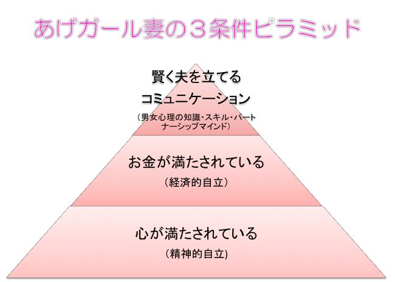

| 「離婚だ！」から90日 夫婦仲修復 ダイアリー: 「モンスター妻」から「あげガール妻」へ！アラサーバリキャリ女性とバツイチ相談員の物語 | |
| 佐藤 久恵 | |
| soleil partners syuppann (2016) | |
無数の本の中から、この本を選んでいただき、誠にありがとうございます。
その感謝の気持ちと、あなたが少しでもこの本をきっかけに幸せになれますようにという気持ちを込めて、読者特典をご用意させていただきましたので、はじめにお知らせさせていただきます。
〈読者特典〉
「 あげガールになる無料メール講座 」にご登録いただいた方に、本文中にも登場する「あげガール度チェックリスト」と「初 回 30 分相談」を無料プレゼントさせていただきます！
また 、 LINE @ への無料登録で、【４万円相当の豪華３大特典】をプレゼントさせていただきます。詳細・ご登録は、 こちら からお願いいたします。
＊＊＊
プロローグ 〜はじまりは、突然の離婚宣告〜
６月 22 日（水）
結婚してから早２年が過ぎた。
「そろそろ、子どもも欲しいし、子育てがしやすくて家賃がもう少し安い所に引っ越そう」と、ここに引っ越して来たのが２ヶ月前のことだったな。
周辺の環境も、マンションも、そこそこ気に入っているのに、引っ越してからというもの、１つ年上の夫、優吾（ゆうご）とどうも上手くいかない......。
わたしの名は橘 咲生（たちばな さき）。 27 歳の営業ウーマン。
その日、わたしは嵐の中、帰宅を急いでいた。
21 時か。あぁ、今日も結局こんな時間になってしまった。今は、仕事が立て込んでいて、帰りが遅いのは仕方がないけれど、最近、優吾とはめっきり会話が減ったし、ケンカが絶えない日々。
このままではいけないのは分かっているのに......。
いったい、どうしたらいいんだろう......。
ただでさえ憂鬱なのに、雨と風がいっそう気持ちを落ち込ませていた。
はぁ、家に帰ったら優吾と何を話そうかな......。
咲生 ただいま〜。あれ？ 優吾いるの〜？
（夫の優吾はとっくに帰っているはずなのに、部屋の中は、電気ひとつついておらず、静けさに包まれていた。疑問に思いながら咲生がリビングにたどり着くと、そこには優吾がひとり、ソファーに深々と腰掛け、頭を垂れていた。どう見ても、様子がおかしい...。）
咲生 ......ただいま〜。どうしたの？ 何かあったの？
優吾 もう耐えられない、もう離婚だ！ お願いだから離婚してくれ！
咲生 え！？ 何、突然！？ ......もしかして、好きな人でもできたの！？
優吾 .........好きな人ってわけじゃないけど、「あぁ、こんな奥さんが理想だなぁ」って思ってる人はいる。やっぱり、ぼくは、奥さんが家でご飯を作って待っててくれる、そんなあったかい家庭が築きたいんだ。咲生とは、それは実現できない。それに、咲生のことはもう好きじゃないんだ。一緒にいると苦しくて......このままだとぼくは心が壊れちゃいそうだよ！ だから、もう無理なんだ！ お願いだから、離婚してくれ！
咲生 ............。
（わたしは、数秒間、優吾の言っている意味が理解できず、頭が真っ白になった。段々意味がわかってくると、一気に怒りがこみ上げてきた。）
絶対に、わたしのことを一生幸せにするって、そう約束したのに！ うそつき！ 結局、あんたもその辺のサイテー不倫男と一緒じゃない！！
「 ボフッ！！」
わたしは、傍らにあったクッションを力一杯優吾に投げつけ、ケータイだけを片手に外へ飛び出した。
外の雨風は、心なしかさっきよりも強くなっている気がした。
傘を取りにマンションへ戻る気力もなく、もはや、涙なのか雨なのかもわからないものに頬を濡らし、全身ずぶ濡れになって、ひたすら歩くしかなかった。
一度歩みを止めてしまうと、自分の心までも止まってしまいそうで怖かったんだ......。
＊＊＊
この本を手に取ったあなたは、きっと、夫婦仲で何らかの悩みを抱えていることでしょう。
「夫から、突然離婚を言い渡された」
「夫と会話もないし、顔すら合わせない、家庭内別居状態が続いている」
「夫が不倫をしている（疑いがある）」
状況はどうであれ、
「絶対に夫婦仲を修復したい！！
でも、どうしたらよいかわからない......」
そんな想いでいるのではないでしょうか？
この本は、そんなあなたのために書きました。
現在、この日本では３組に１組が、総数にすると、年間約 25 万組の夫婦が離婚をしています（厚生労働省 平成 21 年度「離婚に関する統計」より）。これは、約２分に１組が離婚していることになります。つまり、カップラーメンができあがるより早く、この日本中のどこかで離婚しているカップルがいるというのです！
今や、日本ではそれだけ離婚は「カジュアル」なことになり、離婚したからといって、特に世間から後ろ指を指されるなどということは、ほとんど無くなりました。そればかりか、近年では、離婚経験者のことを「バツイチ」ではなく「マルイチ」と呼んだり、離婚経験者の方がモテたりと、離婚に対するイメージが「ポジティブ」に変わってきてさえいます。かくいうわたしも、離婚経験者なわけですが、「わたしマルイチなんです」と、ある意味得意げに（笑）人に伝えることがよくあるものです。
この離婚の「カジュアル化」や「ポジティブ化」自体を悪いとは言いません。わたし自身、離婚によって自身の人格が見直せましたし、離婚がきっかけで、その後素晴らしい人たちとの出会いや心からやりたいと思える仕事に出会えました。このように、離婚をした方がよいケースがあることも認識しています。
ですが、離婚による代償がいかに大きいか、甘く考えることは大変危険です。
わたし自身は、子どもがいませんでしたし、収入的な問題もなく、加えて、当時まだ 20 代後半と若かったこともあり、離婚を妨げる要因はほとんどありませんでした。そのため、夫との関係修復が無理だと早々に諦め、「さっさと次にいこう！」とあっさり離婚したのは良いのですが......、離婚による精神的ダメージは想像以上に重く、そしていつまでも尾を引きました。 Thomas H. HolmesとRichard H. Raheの「社会的再適応評定尺度」（１９６７年出版、心身医学研究に掲載 ※１）によれば、 人生で一般的に起こりうるストレスの高い出来事のうち、離婚は「配偶者の死」に次いで第２位の精神的打撃を受けると出来事だというデータがあるほどです。
性格の不一致、不倫、暴力、ギャンブルなど、表面的な離婚事由は様々ですが、結局、９割方は「自分自身および相手とのコミュニケーション」の問題。逆に言えば、この２つさえ上手くやれば、離婚は十分に回避できるのです！
この本には、「自分と相手とのコミュニケーションによって夫婦仲を修復できる」という、ある一つの典型的な「型」をストーリー形式でまとめました。具体的なスキルやワークもありますので、どうぞ主人公の咲生と一緒に、あなたも取り組んでみてくださいね。但し、その際、この本を読んであなたが行動を変えたということは、絶対にパートナーには伝えないでください。
一生を誓い合った最愛のパートナーとの関係修復を望む、そんなあなたの切なる願いを叶えるヒントが、一つでも多く得られることを、心より祈っています。
※１ 社会的再適応評定尺度は、１９６０年代後半
に
Thomas Holme
sと
Richard Rah
e
が、人生で一般的に起こりうるストレスの高い出来事が、個人の健康や幸福に与える影響の大きさを調べるために開発したもの。
それぞれの出来事に割り当てられた平均値（生活変化単位値と呼ばれる）は、無作為に抽出した多数のサンプルに対し、それぞれの出来事が、どの程度の精神的打撃を与えたかを聞き取り決められた。
生活変化単位値を、「配偶者の死＝１００」とした場合、離婚に関連する出来事は、離 婚 = 73 、夫婦別居生 活 = 65 、夫婦の和解調停 ＝ 45 、配偶者との口論の回数の変化 ＝ 35 などと続く。生活変化単位値が高ければ高いほど、よい状態に戻るのに労力がかかる。
目次
６月 26 日（日）
突然の離婚宣告から４日目の休日。わたしは、藁にもすがる思いで有名な大手離婚相談所のカウンセリングルームを訪れていた。
都内にあるマンションの一室に入ると、薄ピンクの壁紙に白い家具、窓際には紫がかったピンクと白の生花が飾ってあった。温かいイメージの内装なのに、なぜか無機質な雰囲気を感じて緊張した。
奥に進むと、白い４人掛けの角テーブルの上座側に、カウンセラーと思われる女性がいた。 50 代前半くらいだろうか？ 眉間に深いシワが刻まれ、バブル時代を彷彿とさせる厚化粧と派手なスーツのその姿に、わたしの緊張はより高まったのだった。
カウンセラー ようこそ「なでしこ離婚相談所」へ！ はじめまして、カウンセラーの田中です。どうぞおかけください。
咲生 （ん？ 随分としわがれた声。この人、酒焼けでもしているのかな？）あ、はじめまして橘（たちばな）咲生です。失礼します。今日は、よろしくお願いします。
田中 橘 咲生さんですね。咲生さんとお呼びしてもよろしいかしら？
咲生 はい、構いません。
田中 ありがとうございます。咲生さん、どうやらとてもお疲れのご様子ですね。ちゃんと睡眠はとれていますか？ 食事は？
咲生 あの、やっぱりわかりますよね？ はい、実は、４日前に突然夫に離婚宣告をされたショックで、ほとんど眠れず、食欲もなくて......。
田中 やはり、そうでしたか......。この相談所に来られる方の多くが、咲生さんと同様の状況なんです。わたしも過去に離婚を経験して辛い思いをしました。辛いのはあなただけじゃないから、大丈夫よ！ それで、今はどんなお気持ちですか？
咲生 わたしは、どうしても離婚はしたくないんです。たった２年前に一生を誓い合ったのに、ここで別れるなんて、わたしには考えられません。ですが、夫は「別れたい」の一点張りで......。それで、もう、どうしたら良いかわからず、こちらに伺いました。
田中 咲生さんは、どうしても離婚はしたくないのね。わかりました。もう少し、いきさつを詳しく聞かせていただけますか？
咲生 はい。わたしたち夫婦は今結婚２年と３ヶ月経った所です。結婚して１年が過ぎた頃からケンカが増えていきました。特に、外出するとケンカすることが多かったです。スキンシップも徐々に減っていきました。途中、何度もダメかもと思ったのですが、その度に話し合いをし、また、共通の友人たちの支えや、共通の趣味があったことで助けられながら、なんとかかんとかやってきました。
田中 なるほど。結婚１年が過ぎたあたりから、関係が悪くなっていったのね。
咲生 はい、そうですね。わたしも夫も、よく泣いていました。それから、結婚して２年を迎えようというあたりで、「そろそろ子どもが欲しいよね」ということで、夫の実家の近くで少し家賃が安い所に引越したんです。それが、つい２ヶ月ほど前のことです。
田中 あら〜、つい最近まで、将来の家族計画を視野に入れていたのね？ それから、何があったんですか？
咲生 そうなんです。つい最近までは、将来のことも夫と話していました。ところが、わたしにもこれというきっかけはよくわからないのですが、引っ越してすぐに、急激に仲が悪くなってしまったんです。
田中 具体的には、どんな風に？
咲生 えぇと、以前よりも、夫が自室にこもることが増え、話をする機会が減っていき、たまに話をしたと思えばいつもケンカになってしまって。すっかりセックスもなくなり、わたしはいつもイライラしたり、虚しかったり......。そして、そんな感情を抑えきれずに、夫にそのままひどい言葉をぶつけたり、だんまりを決め込んだりを繰り返していました。
田中 そうだったんですね。それでは、旦那さんも嫌だったでしょうね。
咲生 ......悪かったなぁとは思いますが、でも、わたしだって辛かったんです。
田中 仲が悪くなっていった原因は、なんだと思いますか？
咲生 原因ですか？ ......えぇと、あ、そうですね。前は夫の部屋が共同の寝室と一緒だったのが、引っ越し先では夫の個室ができたんです。その影響があるかもしれないです......。あとは、前よりも通勤時間が片 道 30 分ほど長くなったので、その分、朝も夜も一緒にいられる時間が減りました。それに、ちょうど引っ越してからのこの２ヶ月間は、わたしの業務が一年で一番忙しい時期で、帰宅時刻がとても遅かったのもありますね。......はぁ、こうやって考えると、引っ越さなきゃよかった......。
田中 なるほど。他に、不仲になった原因として何か思い当たることはありませんか？
咲生 はぁ......。（なんなんだろう、このカウンセラー。なんだか、警察で事情聴取をされているみたい......。）
あの、わたしいつも疲れ切っていて、家事はまったくと言っていいほどできず、夫に任せっきりでした。それなのに、お礼を言うどころか、夫の家事のやり方が気に入らず、小言を言ってしまいました。それに、部屋も散らかしてばかりでした。
田中 はい、まだありますか？
咲生 あと、子どもができてからのことを考えると、「もっと夫に安定して高い収入を稼げるようになってもらわないと」と思ったし、わたし、夫ならもっとイイ所で活躍できる力があると思っていたんです。だから、大手への転職を勧めて、そのために、趣味の時間を削ってでも、もっと自己啓発をするように勧めました。わたしとしては、すべてよかれと思って言ったつもりだったのですが、それがダメだったみたいです......。
田中 そうですね。咲生さんも疲れていたしよかれと思ったとはいえ、そんな風に家事に小言を言ったり、部屋を散らかしたり、夫の仕事や経済面、趣味について口を出すなんてことをすると、男は嫌がるものですからね。
咲生 ......はい。（いや、そんなのはわたしだって反省しているし......。いったいこの人はどっちの味方なんだろう？）
田中 ところで、旦那さんはどんな性格の方ですか？
咲生 旦那の性格ですか？ そうですねぇ、優しくて、おおらかで、一途で、甘えたがりで、繊細で......例えるなら、大型犬のような人です。頼りなかったり、言葉で表現するのがあまり得意じゃない所が、わたしとしてはイライラするんですけどね。
田中 なるほど。交友関係はどうですか？
咲生 交友関係は、夫は本当に狭くて、ほとんどが会社か地元。それ以外には、少しだけ趣味の繋がりがある程度で、わたしが「もっと外に出て行ってもいいよ」と言うくらいでした。
田中 なるほど。そんな、交友関係が狭くて一途な旦那さんが、急に離婚だと言い出したのですね？ 他に好きな女性がいる可能性はどうですか？
咲生 そんな、彼に限って不倫なんてないと思います！ あ、でも、そういえば、離婚を言い渡された時に、「理想の奥さん像」と思う先輩がいるとは言っていました。
田中 そうですか。......わたしは、今まで１００人以上の離婚相談に乗ってきました。その経験上、残念ながら旦那さんは不倫をしている可能性が高いと思います。旦那さんのような性格の方が突然離婚要求をして引かないケースは、ほとんどは不倫が絡んでいます。
咲生 え！？ バカなこと言わないでください！ うちの旦那に限ってそんなことは決して............。
田中 旦那さんを信じたいお気持ちは分かります。けれど、わたしは、あなたのために、考えられる可能性としてお伝えしなければなりません。もし、不倫が事実だとしたら、あなたはこのまま黙って離婚してもいいのですか？ 自分の目で真実を確かめて見られてはいかがですか？
咲生 ............。
そこから先のやりとりは、正直、あまり覚えていない。
あの一途な優吾が不倫！？ そんなことあり得ない！ でも、経験豊富なカウンセラーが言うんだから、本当なのかもしれない......。
真実は何なのか、知りたい。けれど、怖い......。
それに、それが判ったところで何になるんだろうか？ なんだか、あのカウンセラーの言うことは、信用できないし、どうも腑に落ちない。
「どこか、別の相談所にも相談してみよう」
そう思った次の瞬間には、いくつかネット検索をする中で偶然に目に止まった「夫婦仲相談所」に、電話をかけていた。
この不安と恐怖から、一刻も早く解放されたかったんだ。
もしかしたら、「離婚相談所」ではなく、『夫婦仲相談所』という名前にひかれたのかもしれなかった。
（短い発信音のあと、すぐに電話に出た女性は、「はい、夫婦仲相談所『 ソレイユ・パートナーズ』でございます」と名乗った）
咲生 あ、もしもし。あの初めてなんですが、ホームページで初 回 30 分無料電話相談があると拝見し、かけさせていただきました。
相談員 そうでしたか。お電話くださり誠にありがとうございます！ わたしは、代表相談員の「春海（はるみ） ひかり」と申します。どうぞ宜しくお願いいたします。匿名でもご相談はお受付可能ですが、差し支えなければお名前を伺ってもよろしいでしょうか？
咲生 はい。わたしは、「橘 咲生」と申します。
ひかり 橘 咲生さんですね。華やかで素敵なお名前ですね。もし、ご希望でしたらこのまま相談に入らせていただけますが、いかがいたしますか？
咲生 ありがとうございます。一刻も早くご相談したかったので助かります。
ひかり かしこまりました。では、橘さん、よろしければ、下のお名前で呼ばせていただいてもよろしいでしょうか？ わたしのことも、よろしければ「ひかり」と呼んでいただけたら嬉しいです。
咲生 もちろん、大丈夫です。わたしも、ひかりさんと呼ばせていただきますね。
ひかり では、簡単にわたしの自己紹介をさせていただきますね。わたしは現 在 33 歳で夫婦仲修復コーチとして、こうして夫婦仲でお悩みの方のご相談に乗ったり、セミナーを開いたりしています。特に、奥さまが旦那さまを賢く立てて旦那様の自信をあげるような「あげガール妻」に生まれ変わることで夫婦円満を実現する、そんなサポートをさせていただいております。
......そんなわたしですが、実は、以前はまったく逆の「さげガール」でした。夫を攻撃してどんどん自信を無くさせてしまい、ついには夫から愛想をつかされて離婚してしまったという、なんともお恥ずかしい過去があります。しかし、その離婚を機に、コーチング・カウンセリング、男女心理の違い、成功哲学など、様々なことを学びつつ自分を変えた結果、今は、最愛の夫と再婚することができました。
そのわたしの経験も踏まえ、現在は、「子どもが憧れるような笑顔の夫婦でいっぱいの日本」を目指し、活動をさせていただいています。少しでも咲生さんのお役に立てましたら幸いです。どうぞよろしくお願いいたします！
それからの 30 分間は、あっと言う間だった。ひかりさんは、ほとんど口を出すこともアドバイスを押し付けることもなく、ただ熱心にわたしの話に耳を傾けてくれた。その声は、とても柔らかく落ち着いており、話を聴いてもらっているだけで、心が不思議と癒されていくのを感じた。
「この人となら、優吾との仲が修復できるかもしれない！」
そう直感したわたしは、継続してひかりさんに相談することを決めた。そして、最後に、ひかりさんが話してくれた、相談所としての「約束」。それが、「信頼できる相談相手はこの人にちがいない」というわたしの確信を高めたのだった。
ひかり 最後に、わたしたちの約束をお伝えさせてください。わたしたち「ソレイユ・パートナーズ」は、次の ３ つのことを大切にしています。
①「本気で夫婦仲を修復したい」という方のサポートを、全力でさせていただいています。「離婚させ屋」ではないので、命の危険等がある場合を除いて、こちらが離婚に無理やり持っていくということはありません。
②相談員は、決してアドバイスを押し付けたり、クライアントさまを否定することはありません。アドバイスもしますが、それを受け入れるかどうかはクライアントさまの自由です。わたしたちは、いつでも１００％あなたの味方です。
③基本的に、あなたの長所と未来にフォーカスをしますので、自信を高めながら夫婦円満を実現します。短所を指摘してばかりいたり、触れられたくない過去を、許可なく無理やりほじくり返したりということは、ありません。
なぜ、これらを大切にしているかというと、実は、わたし自身が前夫との離婚問題で困り果てた際に、離婚相談所で苦い体験をしたからなんです。相談員は、わたしの短所を責め立て、「旦那さんは不倫しているに違いない」と決め付けました。冷静に考えれば、修復したいのにそんなことをしても逆効果ですから、その相談員は離婚に仕向けたかったのかもしれません。ですが、当時のわたしは冷静な判断ができるような精神状態ではなかった。そして、その相談員に言われるがままに、わたしはこっそり夫のメールチェックをし、レシートをあさり、不倫調査をしました。疑いを持ち続けて精神的に耐えられなくなったわたしが、義母に夫の不倫疑惑について話すと、義母は夫を問い詰めたのです。結果、前夫は不倫などしていなかったのですが、わたしが勝手に夫のプライバシーを侵害し、さらに義母に告げ口までしたことで、夫との関係は完全に修復できないものに......。
わたしの場合、たまたま運と相談員との相性が悪かっただけなのかもしれませんが、「夫婦仲を修復したい！」という切実な想いと、藁にもすがる想いを胸に相談所を訪れた方に、わたしは絶対に自分の二の舞を演じてはほしくなかったんです。
咲生 え〜！？ そんなことがあったんですね！ まさにわたしが、危なくその二の舞を演じてしまう所でしたので、ゾッとしました......。相談所を選ぶ際は、そうしたポイントを見極めることが重要なんですね。あぁ、わたし、ひかりさんと出会えてよかった。
ひかり 相談所は、外に出ている情報ではこれらのポイントはなかなかわかりませんから、咲先さんのように実際に利用されてみることを、わたしはお勧めしています。今の咲生さんのありがたいお言葉にお応えできるよう、これから精一杯サポートさせていただきますね！ では、来週、ひかりさんとお会いできることを楽しみにしています！
電話を切ると、不安でいっぱいだったわたしの心に、小さな希望が感じられるのがわかった。
これが、わたしとひかりさんとの運命の出会いだった。
７月３日（日）
ひかりさんとの電話相談から、ちょうど一週間が経ち、今日は、いよいよ初めての対面相談。都内にあるひかりさんの自宅兼サロンは、最寄駅から徒歩５分ほどの 14 階建てマンションの７階。早めに着いたし、朝の程よい陽気が気持ち良かったので、わたしは少し散歩をしてから行くことにした。
すると、周辺にはこじんまりとしたカフェやベーカリー、花屋、古着屋に加え、昔ながらの和菓子屋と商店街も発見！ 便利な中にもどこかゆったりとしたその町の空気は、期待と不安が入り混じったわたしの心を、ちょっぴり落ち着かせてくれた。
⬛⬛
（別れ話を切り出されて以来、咲生がこんなにリラックスした気分になったのは久しぶりのことだった。夫婦仲相談所『 ソレイユ・パートナーズ』が入るマンションに着いた咲生は、建物の入口に備え付けられたインターフォンを押した）
咲生 こんにちは〜！ ９時に予約させていただいた、橘 咲生です。
ひかり 咲生さん、お待ちしておりました。今、オートロックを開けますね。どうぞ、中に入って７階へお上がりください。
咲生 （わぁ〜♪ 景色がきれい！ 都会なのに、この辺は高い建物がないから、７階でもこんなに見晴らしがいいんだ！）えぇと、７０３号室......あ、あった！
「ピンポーン」
ひかり は〜い！ いらっしゃいませ！ 咲生さんですね？ どうぞ中へ。暑い中、朝早くからご足労いただき、ありがとうございます。
咲生 ありがとうございます。おじゃまします。（ひかりさん、電話での落ち着いた雰囲気から想像するよりも、小柄でほんわかした感じ。色白な肌にナチュラルメイクと明るい茶色のミディアムボブの髪型がとっても似合っていて、女性らしいし、かわいいなぁ）
ひかり どうぞ、こちらにおかけください。暑かったでしょう？ 今、冷たいジャスミンティーをお持ちしますね。
咲生 （あ、真っ白な壁にかけられた、パステルカラーの向日葵畑の水彩画。ステキだなぁ。棚の上にも、向日葵の一輪挿し。ひかりさんは向日葵が好きなんだ！ わたしと一緒だ♪ ナチュラルな茶色の木の家具も、明るい黄色を基調とした小物類も、観葉植物も......。あぁ、なんて居心地のいいサロンなんだろう）
ひかり お待たせしました。はい、どうぞクールダウンされてくださいね。ご気分、ご体調はいかがですか？
咲生 お気遣いありがとうございます。そうですね、体調は、まぁまぁ良いです。相変わらず食欲はあまりありませんが、おかげさまで眠れるようにはなりました。あと、気分は、不安もありますが、どちらかというとドキドキ・ワクワクという感じです。
ひかり 顔色も良いですし、体調は良さそうで安心しました。ご気分は、ドキドキ・ワクワクされているんですね。どうぞ、座る体勢も含め、お好きにリラックスされてくださいね。
わたしは、咲生さんにお会いできて嬉しい気持ちです。お電話での印象では、とっても落ち着かれてしっかりされた印象でしたが、こんなに小柄でキュートでいらっしゃるなんて！ ショートパンツもとってもお似合いですね！ わたしが男性だったら、確実に一目惚れしちゃう所です。うふふ。
咲生 あはは、そんな、恐縮です。わたしこそ、ひかりさんがわたしと同じくらい小柄でびっくりしました！ そして、とても女性らしい柔らかさをお持ちで、羨ましいです。わたしも惚れちゃいそうです。このサロンも、とてもステキですね。わたしも向日葵が大好きだからかな？ なんだかすごく親近感が湧いてしまって、初めて来たとは思えないくらい、居心地がいいです。
ひかり 本当ですか！？ わたしのこともサロンのことも、そんな風に言っていただけて、とても嬉しいです！ ありがとうございます。おっしゃる通り、わたしも向日葵が大好きで、あの水彩画は、わたしが目指す「子どもが憧れる笑顔の夫婦でいっぱいの社会」のイメージなんです。
咲生 へぇ〜、そうなんですね！ いいですねぇ。なんだか見ているだけで温かい気持ちになります。
ひかり ありがとうございます。さて、お電話いただいてから一週間ですね。あれから、旦那さんとはいかがでしたか？
咲生 はい。電話でお話しした通り、家を飛び出してから行くところもなくて仕方なく戻ってはみたものの、残念ながら、相変わらず、家庭内別居状態が続いています......。ただ、一つだけ進展があったと言えばあったかもしれません。
ひかり あらっ！ 進展があったんですね！ いいですね、何ですか！？
咲生 あの、ひかりさんと電話をしていて、「心から夫に謝りたい」って思ったんです。だから、勇気をだして、夫にこれまでのことを謝罪しました。
「今までずっと傷つけてごめんなさい。わたしは、いつの間にか優吾に自分の期待を押し付けてわがままになりすぎていました。本当は、わたし、あなたが隣にいてくれたらそれだけで幸せなのに、それを忘れていました......。本当にごめんなさい。どうかそばにいてください。」
って。そしたら、夫はこう言ったんです。
「......ぼくも、できることならやり直したい。でも、ぼくは、ずっと、咲生が変わってくれるんじゃないかって待ち続けてきたのに、咲生は変わらなかった。もうこれ以上信じられないよ......」
「そうだよね。ごめんなさい。今度こそ、わたし頑張るから、どうか時間をください......」
そう言うのが精一杯でした。
ひかり そうだったんですね。長い間で蓄積された不信感を回復するのには、時間がかかるかもしれません。けれど、まず、勇気をだして謝罪と本当の素直な気持ちを伝えられた、その第一歩は一見小さいようですが、最初の第一歩はとても大きいです！ よく頑張りましたね！ まずは、その勇気をだしたご自分を褒めてあげましょう！
咲生 そっかぁ。小さな一歩が大きな一歩......。ありがとうございます！ まずは、素直に伝えられてよかったです。
ひかり そうですね！ そして、今日から一緒に二人三脚で進んでいきましょうね！
では、今日の流れですが、わたしたちの間の約束事と方向性を確認するオリエンテーションを行います。そして、その後にこの３ヶ月間のゴールセッティングと具体的なアクションを決定して終わりです。よろしいでしょうか？
咲生 はい、流れは了解しました。よろしくお願いします！
ひかり （守秘義務、倫理規定、セッション以外でのサポート等、ひかり側の約束事を説明した後）修復を進めるのには、咲生さんにもお約束をしていただきたいことがあります。
それは、咲生さん自身が「変わる決心と工夫」をしていただくということです。「他人と過去は変えられない、変えられるのは自分だけ」とはよく言いますが、特に夫婦仲の修復においては、「修復したい」と思った側から変わるしかないのです。お約束いただけますでしょうか？
咲生 はい、もちろんです！ どう変わったらよいかわからないのと、自分自身がなかなか頑固なのを知っているので、不安はありますが......覚悟はできています！
ひかり ありがとうございます！ 咲生さんの覚悟、わたしにもしっかり伝わってきました！ では、今わからないとおっしゃった「どう変わったらよいか」について、これが絶対的な正解というものではないのですが、大きな方向性についてお話ししていきますね。
ズバリ言えば、それは、咲生さん、あなたが「あげガール妻」になることです！
咲生 は、はい！ 電話でもその言葉を聞きましたが、具体的なイメージがつかめません。なんとなく、「あげまん」＝「運気をあげる女性」と近い印象はあるのですが、どういうことか教えていただけますか？
ひかり えぇ、お任せください！ ここからはとても重要なお話になりますので、しっかりお伝えさせていただきますね。「あげガール妻」とは、夫の自信をあげることで、夫の年収をあげたり、あらゆる面で夫を成功に導いてしまうような、そんな女性のことです。そして、そんな あげガール妻は、３つの条件を満たしているんです。
まず、１つ目は、賢く夫を立てるコミュニケーション能力です。
賢く夫を立てるコミュニケーションをするために必要なものって、咲生さんは何だと思いますか？
咲生 えぇと、そうですねぇ。たとえば、どうされたら男性は嬉しいかを知ることでしょうか？
ひかり うんうん、いいですねぇ。そう、それはつまり、男女心理の違いを知るということ。男性は、何をされたら嬉しいのか、あるいは、逆に嫌なのかを知ることです。パートナーシップ研究の第一人者と言われる心理学博士ジョン・グレイは、「男は火星から、女は金星からやってきた」と言っています。そもそも、そのくらい男と女は違う生き物なのだということです。まず、このことを理解するのが、男女間のコミュニケーションにおいて重要です。
けれど、せっかく知識だけあっても、行動に移さないとコミュニケーションは成り立ちませんね。ということで、知識を体現するスキルも必要です。
ここで一つ、よくあるケースのお話をしましょう。
バリバリ仕事がデキる頭の良い奥さまが、「冷え切ってしまった夫婦仲をなんとか良くしたい！」と思って、「夫の愛を取り戻すコミュニケーションセミナー」に２時間参加したんです。そのセミナーで、「男性は褒めてもらいたいものです」と学んだその奥さん、今まで自分が旦那さんのことをぜんぜん褒めて来なかったことに気が付いて、「これからは、褒めておだてまくるぞ！」って決心します。
それで、次の日から、ことあるごとに旦那さまを褒めるようにしたのだけれど、一向に旦那さまの愛が戻って来る気配がない......。それどころか、
「なんだよ！ 俺のことバカにしてんのか！？ 今更おだてたって無駄だよ！！」
と、さらに関係が悪化してしまいました。
さて、この奥さまの何がいけなかったんでしょうか？ 咲生さんはどう思われますか？
咲生 え〜、そうですねぇ。奥さんが、本当に思っていないのに褒めたり、旦那さんを小馬鹿にしたような間違った褒め方をしたからでしょうか？
ひかり そうなんです！ 小手先のテクニックだけに頼って「夫を上からコントロール」しようとすると、うまくいきません。なぜなら、夫は妻の隠されたその意図を敏感に察知し、妻の言葉を信じないからです。
つまり、夫とのコミュニケーションについての知識・スキルを機能させるには、その土台として夫へのマインドが大切なんです。それを、わたしは「パートナーシップマインド」と呼んでいます。
「パートナーシップマインド」とは、
①夫という唯一無二の存在そのものを尊敬する心
②夫の無限の可能性を信じる心
③わたしはいつでも夫の１００％味方だという心
この３つの夫に対する心のこと。この「パートナーシップマインド」をしっかりと認識した上で、知識・スキルを活用するからこそ、夫は妻の言葉を心から信じて、それを受け取って自信が高まります。そして、そんな妻の想いに応えるべく妻に愛情を表現するようになるのです。まとめると、
「あげガール妻」の第一条件、「賢く夫を立てるコミュニケーション」を成立させるためには、
①男女心理の違いについての知識
②①を踏まえた夫とのコミュニケーションスキル
③パートナーシップマインド
この３つがセットというわけです！
ここまでで、質問はありますか？
咲生 はい、大丈夫です！ 「パートナーシップマインド」って大切ですね。わたし、これまで旦那のことを「わたしより優れている点」だけしか尊敬していなくて......まさに、いつも上からコントロールしようとしていました。旦那の存在そのものを尊敬し、可能性を信じて１００％味方する。そんな奥さんになれたらステキだなぁって思います。
ひかり ありがとうございます。咲生さんなら、絶対になれますよ！ 一緒になりましょう！ さぁ、話を続けますね。「あげガール妻」の条件が、あと２つ残っています。
ひかり ここで、わたしが前夫と結婚していたときのお話をしてもよろしいでしょうか？
咲生 はい、もちろんです！
ひかり わたしが前夫と結婚していたとき、大手金融機関勤めだったわたしと中小システム開発会社勤めだった夫では、明らかにわたしの方が収入も残業時間も多かったんです。業界的には夫の方が残業が多くてもおかしくなかったのにも拘わらず、早く家に帰っていた夫は、とても業務効率が高い仕事のデキる人だったんだろうなぁと、今は尊敬しています。しかし、残念ながら、当時のわたしはこんな感じでした。
「あなたの方が稼いでないし暇なんだから、家事やって当たり前でしょ？」
「あなたは、やればできる人なんだから、もっと給料が良くて大手の会社に転職したら？」
「あなた、プライベートで趣味ばっかりやってないで、もっとキャリアアップにつながるような自己啓発でもしたらどうなの？」
こんな小言をいつも夫に言ってしまっていました。
咲生 （ぎくっ......。なんだか、まるでわたしのことを言われているみたい......）
ひかり 優しい夫は直接わたしに思っていることを言うことはありませんでしたが、きっとこんな気持ちだったでしょう。
「俺だって一所懸命に仕事を頑張っているし、どんなに仕事で疲れていても家事までやっているのに、どうしてそんな風に否定ばかりされなきゃいけないんだ！ 俺にとって生きがいの趣味まで取り上げようなんて、もう我慢ならない......。このままでは、俺はどんどん自信が無くなっていく......」
こうして、わたしたちは離婚へと向かっていったのです。
今思えば、なんて傲慢な妻だったんだろうと思うのですが、当時のわたしには、そんな自分がまったく見えていませんでした。いえ、本当はいけないとは分かってはいたのですが、現実を見るのが怖かったんでしょうね。現実を見ずに、表面的には「バリバリ活躍する自立したキャリアウーマン」を装っていましたが、実のところは、自分のプライドを守るために、必死でお金と仕事に依存していたんです。
「会社で誰よりも遅くまで残って働いているわたしってすごい」
「旦那より、世間一般の男性たちより稼いでいるわたしってすごい（悔しかったら越えて見なさいよ、男のくせに）」
「大手上場企業の東京本社で働いているわたしって、エリート！」
無意識レベルで、そんなちっぽけなプライドを保とうと常に夫を上から見下ろし、攻撃をしていたのです。
咲生 プライドを守るために、お金と仕事に依存......。夫を攻撃......。もしかしたら、わたしもそうなのかもしれないです。わたしも、いつも旦那より忙しいし稼いでいることを、直接的でないにしろ鼻にかけていたような気がします。そういえば、うちは結婚式・新婚旅行費用をわたしとわたしの親の方が多く負担をしたんですが、そのことについて冗談まじりに持ち出すことも、たまにありました。きっと、優吾も、その度に嫌な思いをしたんだろうなぁ......。
悪い例は理解できました。けれど、「あげガール妻」だったら、お金と仕事の面はどうなれば理想なんでしょう？ まさか、「お金は夫からの最低限のお小遣いで、仕事はしない、あるいはパート。基本的に家にいなさい！」なんてことはないですよね！？ わたしの旦那も「家で待っててくれる奥さんがいい」なんて言っていましたが、もし、それが「あげガール妻」の条件だとしたら、到底わたしには合いそうにありません。
ひかり さすが咲生さん！ 鋭いですね。それはね、わたしも......無理です！ 外に出て好きな仕事をして、自分で稼いだお金を好きなことに使いたいですもん。もちろん、自分は働かずに、夫を立てて家庭を支える奥さんも素晴らしいです。でも、そのようにお金や仕事を持たずに家にいることが、「あげガール妻」の絶対条件ではありません。ご安心くださいね。
咲生 ふぅ、よかった。一瞬「あげガール妻」への道を諦める所でした。危ない危ない。
ひかり うふふ。咲生さんて、本当に自分に正直な方なんですね。ステキです。
さて、話を戻しましょう。
「あげガール妻」の条件の２つ目は、
お金が満たされている＝経済的自立
です。
「お金が満たされている妻」は、収入金額や仕事の内容・地位などで他人と比較して優劣をつけたり、お金や仕事に振り回されたりすることはありません。もちろん、妻自身がひとりで生きていけるくらいの稼ぎがあれば、家計的にも夫の心理的プレッシャーが軽減されて安心ですし、一般的に「経済的自立」というと、このように収入額のことを指すのではないでしょうか？
しかし、実は、収入額としての「経済的自立」よりもっと大切なことがあると、わたしは思っています。
ちょっと想像してみてください。仮に、咲生さんが専業主婦で、給料日に帰宅した夫と夕飯を食べながら、本当は夫の収入がもう少し増えたらいいのになぁと思っているとします。その場合、次の３パターンの中で、咲生さんだったら、どの反応を選びますか？
パターン①「あなたってなんでこれっぽっちしか稼げないの？ こんなんじゃ、不満よ」
パターン②「今月も頑張って稼いでくれてありがとう。これ以上の稼ぎなんて求めないわ」
パターン③「今月も頑張って稼いでくれてありがとう。あなたがこうして元気で一緒に夕飯が食べられて、わたしは幸せだわ。でも、あなたなら絶対にもっとできるわ！」
さて、どれでしょう？
咲生 う〜ん......。今までのわたしは①返答だけど、これからだとしたら、そうですねぇ......②かな！
ひかり お、これからはパターン②なんですね。いいですねぇ、咲生さんは、本当に思いやりに溢れる方なんですね。もちろん、正解不正解ではないのですが、夫の自信や収入をあげる「あげガール妻」なら、③の返答が望ましいのです。
咲生 えぇ！ そうなんですか！？ なんだか、③は、夫にプレッシャーになりすぎちゃうのかなぁと思ったのですが。
ひかり ですよね？ わたしもそう思っていました。男性は、それとなくプレッシャーをかけてくる妻よりも、②のように、献身的で奥ゆかしい奥さんが好きなのかなぁって。けれど、②の場合は、夫が「このままでいいんだ」と安心しきってしまって、これ以上頑張ろうという気力が湧かなくなってしまうんです。
一方、③のように、感謝と満足感を示した上でさらに背中を押すと、夫は、「そうか、俺はもっと稼ぐに価する男なんだ！」と自信が湧き、結果的に収入も上がってしまうものなんです！ そして、この③のような言葉を言える「あげガール妻」がもっているお金と仕事に対する観念の代表的なものは、これです！
①今あるお金と仕事に心から感謝をしている
②お金と仕事以外のもので、幸せを感じている
③お金と仕事は、人生をより良くしてくれる素晴らしいものだと考えている
④妻自身が働いているか否かにかかわらず、夫のお金と仕事について当事者意識がある
咲生 なるほど〜。特に、④が面白いですね。これは、妻が働いていないとしても、夫の稼ぎをあげるのがわたしの役目と思っているという感じでしょうか？
ひかり そう！ その通りです！ わたしの拙い説明でそのように本質をついてくださって、本当に咲生さんの聡明さには、頭が下がります。
咲生 いえ、そんな！ でも、光栄です。「あげガール妻」のお金と仕事についての捉え方、納得しました。
ひかり さぁ、いよいよ、「あげガール妻」の３つの条件の最後です。
「あげガール妻」の３つ目の条件。それは、
心が満たされている＝精神的自立
これが、すべての土台になる、もっとも重要な条件なのです。
わたしの体験談に戻りますが、離婚後に、わたしは、ちっぽけなプライドで夫を見下していた自分を猛省しました。「賢く男性を立てる女性」になりたい！ と思って、男女心理・コミュニケーションスキルを必死に勉強しました。そして、そんな折に新しい彼氏が！ わたしは、ここぞとばかりに学んだスキルを使ってみました。すると、はじめは見事にうまくいったんです！ 彼はわたしにぞっこんLOVEでした。
咲生
ぞっこんLOVEって、古っ！ あはは、ひかりさん本当は何歳ですかぁ？
ひかり
えっと、心は永遠の
18
歳です！ なんて、中身は親父でごめんなさい......。
咲生 ぷっ。ひかりさんって面白いですね。それで、その後どうなったんですか？
ひかり はい。その時はね、正直、男ってチョロいなぁって思いましたよぉ〜。けれど、残念......そんなに現実は甘くなかった。数ヶ月もしたら彼は他の女性に目移りするようになり、わたしにも冷たく当たったり、ついにはセックスレスにもなりました。
「あぁ、わたしって、やっぱり女性として価値がないのかなぁ......」
なんて思ってみるみる内に自信を失くし、常に気持ちが不安定で、不安になる度に彼にひどい言葉を吐いてしまいました。そして、その彼との関係は破綻していったんです......。
咲生 うぅ〜、そうだったんですねぇ。女性として自分に価値がないんじゃないかって思うのって、とっても辛いですよね......。まさに、今のわたしがそのような気持ちですから、すごくよく分かります。
ひかり そうですよねぇ。それで、その後、その彼とは、結局１年間くらいお付き合いしてお別れしたんです。でね、別れた直後くらいにコーチングを習い始めたんですが、それがわたしの人生を変える大きな転機になるとは、当時は思いもしませんでした。
咲生 え〜！ 人生の転機！？ 何が、あったんですか？
ひかり 当時、元彼と別れたショックを引きずっていたわたしに、周りの友人たちが「ひかりはもっと自分のことを大事にしていいんだよ」って声をかけてくれたんですね。でも、わたし、その意味が良くわからなかったんです。そんな矢先に、魔法の質問家・マツダ ミヒロさんが提唱する「シャンパンタワーの法則」に出会ったのです。ミヒロさんは、いわゆるコーチ界のスーパースターのお一人で、わたしも尊敬する方です。
「シャンパンタワーの法則」について、マツダミヒロさんは、ご自身のブログでこのように説明しています。
『シャンパンタワーをピラミッド状に積み上げて
グラスをこんな風に見立てます。
１番上のグラスを自分自身と見立てて
２段目を、家族（身近な人たち）と見立て、
３段目を友達や一緒に働くスタッフと見立てて
４段目をお客様と見立てていきます。
こう考えた時に、
あなたは何段目からシャンパン（エネルギー）を注いでいますでしょうか？』
ひかり さて、咲生さんはいかがですか？
咲生 えぇと、そうですねぇ......。わたしの場合は、よかれと思って旦那にあれこれ口や手を出したりしていたので、そうすると２段目......かな？
ひかり そうかもしれないですね。ちなみに、わたしの場合も咲生さんと同様に最初にシャンパンを注ぐのは２段目。場合によっては、３段目の家族、４段目のお客様という時もありました。何を隠そう、わたしの小学生の頃のあだ名は「おせっかいババァ」でしたから！
咲生 あはははっ。それ、ひどいあだ名ですね。
ひかり というくらいの、筋金入りのおせっかいだったので、いつでも他人のことばかり優先していました。
でも、「シャンパンタワーの法則」について聞いた時に、はっと気づいたんです。
「あぁ、わたしは今までずっと、１段目の自分のグラスにシャンパンを注いでいなかったんだ。だから、何をしてもどこか満たされず、その満たされない思いを、他人におせっかいを焼いた見返りで満たそうとしていたんだぁ」ってね。
そして、「これからは、まず自分で自分を満たして、溢れた分で大切な人たちを幸せにするぞ！」って決心したんです。
そう決心してから、日々、セルフコーチングをしたり、コーチングを受けたり、自分がポジティブになれる物事を取り入れたりと、ありとあらゆる手段で「自分を満たす」ことをやって行きました。その結果、みるみる内に自分自身のありのままを好きになって心が軽くなり、周囲への接し方も変わり、どんどん会いたい人もやりたいことも、今の夫までも「引き寄せて」しまったんです！
咲生 へぇ〜！ すごい引き寄せ力ですね〜！
ひかり そうなんです！ わたしも驚きでした。元々、わたしって現実派なので、「引き寄せ」とか、「スピリチュアル」とか信じないタイプだったし今も基本はそうなのですが、こういうメカニズムなんだって納得しましたね。
この「まず自分で自分を満たす」ということに関連して、ジョン・グレイ博士はこのように語っています。
『彼女が落ち込んでいたり、泣いていたり、不機嫌なとき、あるいは、男性に
「わたしを幸せにするために、あなたはこう変わるべき」
としょっちゅう指摘をし続けると、彼は疲れてきます。
「ぼくのすることは、何一つ彼女を幸せにしないのか・・・」と。
彼が成功するためには、まず女性が自分で幸せを見つけなければならない。
男性から離れて、女性が、まず自分で自分を幸せにすること。そうすると、あなたは幸せで満ち足りた人になります。
そして、大切なのは、「まず自分が幸せで、そして彼はもっと自分を幸せにしてくれている」と伝えることです。』
（2016年4月22日付公開動画 本田健の人生相談〜ＤｅａｒＫｅｎ〜より抜粋）」
ともすれば、「夫はわたしのことを幸せにしてくれない」と、自分の幸せの責任を夫に押し付けてしまいがち。けれど、わたしたち女性には自分で自分を幸せにできるだけのチカラが、必ずあるんです！ そして、自分で自分を幸せにした状態で、「あなたはもっとわたしを幸せにしてくれている」と夫に伝えることで、夫の自信が高まり、そうすると、夫はさらにあなたのことを幸せにしようと仕事に精を出したり、家事を手伝ってくれたり、プレゼントをしてくれたりするようになるというわけです！
はい、ここまでの所は、よろしいでしょうか？
咲生 なるほど、そう言うことなんですねぇ〜。はい、頭では理解できました。
というのも、何だか、「まず自分で自分を満たす」って言うと、「自己中心的な人＝迷惑な人」という意味に近いのかなぁと思ったので......まず自分を幸せにするからこそ、周りの人をもっと幸せにできたり、夫からの愛情をもっともらえるようになったりするというのは、まだちょっと不思議というか、不慣れな感じがします。
けれど、本当にこれが実現できたとしたら、自分も周りもみ〜んなハッピーになって、最高ですね！
ひかり はい、まずは、そこまで理解してくださったら、バッチリです！
ひか り さぁ、これで、「あげガール妻」の３つの条件が揃いました！
条件① 賢く夫を立てるコミュニケーション能力
条件② お金が満たされている（＝経済的自立）
条件③ 心が満たされている（＝精神的自立）
真の「あげガール妻」として夫と長期的に幸せな関係を築いていくためには、妻の心とお金が満たされた上で、賢く夫を立てるコミュニケーションがとれるという３つの条件がすべて揃っていることが重要なんです。

とはいえ、頭では理解できても、この３条件が一朝一夕に揃うことはあり得ませんし、「まず心を完璧に満たしてからじゃないと夫とのコミュニケーションの方法はお伝えできません！」なんて言っている場合じゃないですよね。
咲生 確かに〜。そんなにのんびりしていられません！
ひかり だからこそ、この「 90 日間あげガールコーチングプログラム」では、この３条件をバランスよく整えながら、徐々にピラミッドを大きく、そして強固にしていきます。要するに、「鶏が先か、たまごが先か」ではなく「鶏もたまごも同時に育てちゃえ」ということです。
咲生 あはは。その表現、とても面白いし分かりやすいです。
ひかり ありがとうございます。そして、そのために、毎回レクチャーとコーチングを組み合わせていきますね。具体的には、次の５つの項目を、柔軟に順序を組み替えながら進んでいきます。
①男女心理の違いを理解する
②夫を賢く立てるマインド・知識・スキルを習得する
③現状の自分を満たす
④過去の意味づけを変える
⑤未来の理想イメージをありありと味わう
今日ご説明した「あげガール妻」の条件など、これから 90 日間かけて徐々に実感していただけるようなプログラムになっていますから、ご安心くださいね。
夫婦仲修復って、何だか辛くて苦しい......そんなネガティブなイメージがあると思うのですが、本当は、ちょっとした自分の変化や旦那さんの反応がすごく嬉しかったり、どんどんなりたい自分になっていける、とてもポジティブなプロセスなんです！ なので、ぜひ一緒に楽しんでいきましょう！
咲生 はい、まだ夫との関係は変わっていないのに、何だかできる気がしてきました！！ どうせやるなら、本気で楽しくやりたいです！ ぜひ、サポートのほどよろしくお願いします！
ひかり 早いもので、本日のご相談時間があと 40 分ほどとなりました。いよいよ本日の最後のテーマ「ゴールと具体的に踏み出す行動」に入っていきます。大丈夫ですか？ お疲れではないですか？
咲生 はい、大丈夫です！ よろしくお願いします。
ひかり ありがとうございます。では、少しリフレッシュのために、立ち上がってストレッチと深呼吸をしましょうか。はい、手を思いっきり上に伸ばして〜。そして、深呼吸を３回で〜す。ご自分のタイミングで、終わったら立ったまま教えてください。
咲生 ふはぁ〜。終わりました～。気持ち良かったです〜。
ひかり それは良かったです。ストレッチと深呼吸をちょっとするだけでも、気分がリフレッシュできますから、気分が落ち込んだ時とか、思考が硬直した時にされると効果的ですよ。
さて、先ほどね、咲生さんが「もしこんなあげガール妻になれたとしたら、最高ですね！」って、そうおっしゃいました。どうですか、今この瞬間も、「心もお金も満たされて男性を賢く立てる、あげガール妻になりた〜い！」って思われますか！？
咲生 はい！ もちろん、なりたいです！ なって、最高の円満夫婦を実現したいです！
ひかり わかりました！ はい、それでは、今、ここでなってみましょう！ では、咲生さんがね、今日から本気で楽しみながら取り組まれて、理想の「あげガール妻」になりました。そして、ついに３ヶ月後には、最高の円満夫婦を実現できちゃいました！ さぁ、では目を閉じて、本当にそれが実現できた〜っていうシーンを、想像してみてください。............今、咲生さんは、最高の夫婦円満の３ヶ月後を達成できちゃいました。さぁ、今日は何月何日ですか？
咲生 今日は......９月 22 日です。
ひ かり ９月 22 日なんですね。何か特別な日ですか？
咲生 はい、わたしたち夫婦が結婚してちょうど２年半の記念日です。
ひかり あぁ〜、そうなんだぁ。ステキですねぇ。今日は、場所はどちらにいらっしゃるんですか？
咲生
場所は、ディズニーシーにいます。
ひかり
わぁ、いいですねぇ！ ９月
22
日は、ディズニーシーでどんな風に過ごされているんですか？
咲生 えぇと、まず、開園とほぼ同時に到着して、入園したら、真っ先にね、被り物を買うんです。絶対、後で「いらなかった〜」っていうやつを。
ひかり うんうん、それでそれで？
咲生 そして、アトラクションの混み具合をしっかりネットで確認しながら、ファストパスを活用して、とにかくたくさんのアトラクションに乗るの！ 超人気のものから、まったく人気のないものまで、とにっかくたくさん。で、途中途中で、チュロスとかチキンレッグとかちょこちょこ食べながら、夢中で遊んでたら、気づいたらあっという間に夕方になっちゃうんです。
ひかり うわぁ〜、すごいアクティブですね！ じゃあ、その素晴らしい９月 22 日の中でも、一番最高のシーンっていつですか？
咲生 一番最高のシーンは......、そうですねぇ、園内のハーバーと花火を見ながら楽しむ、レストランディナーの時ですね！
ひかり まぁ！ とってもいいお席でのレストランディナーなんですね！ へぇ〜その時、どんなものを食べていますか？
咲生 美味しい魚介がたくさんの、イタリアンです！
ひかり 魚介がたくさんのイタリアン、美味しそうですね〜。食べながら、旦那さんとどんな会話をしていますか？
咲生 そうだなぁ。「特にこれが美味しいね〜」とか、「花火きれいだね〜」とか、「あのアトラクションが楽しかったな〜」とか......。
ひかり うんうん、他には？ どんな会話をしています？
咲生 他には......結婚してから今までのこととか......、たとえば、「３ヶ月前までは、本気でもうダメだと思っていたから、こんな風にまた仲良く記念日を祝える日が来るなんて、思っても見なかったよ。あの時、咲生が２人の仲を諦めないでいてくれて、本当に良かった。諦めないで、ずっとぼくのそばにいてくれて、本当にありがとう」とか......。
（そう話す咲生の瞳は、今にもこぼれそうな涙で溢れていた）
ひかり そうなんですねぇ。そんな風におっしゃる旦那さんの表情は、いかがですか？ そして、そんな旦那さんに、咲生さんはどんな表情でなんとお答えされていますか？
咲生 あぁ、旦那は、なんだかとても穏やかで、愛情に満ちたような表情ですねぇ。そして、わたしも、同じく穏やかで旦那への愛情に満ちた表情で......「うん、わたしも本当に諦めないで良かった......。こうして優吾と一緒に過ごせるなんて、本当に夢見たいに幸せ。そばにいさせてくれて、本当にありがとう」って伝えてます。
（先ほどはなんとか瞳に留まっていた咲生の涙が、この時には次から次へとあふれ出し、頬を濡らしていた。ひかりもまた、涙を１粒、２粒こぼしながらも、咲生にそぉっとハンカチを差し出した）
ひかり あぁ、咲生さんも旦那さんも、穏やかで愛情に満ちた表情で、そんな風にお互い一緒にいてくれることへの感謝を伝え合っているんですねぇ。愛に包まれたお２人の姿が、わたしの目にも浮かぶようです。さぁ、では、目を静かに閉じたまま、その最高のシーンを味わってください。............そのシーンの中の咲生さんは、どんなことを感じていますか？
咲生 ......本当に諦めないで良かったし、今が心から幸せだなぁって。そして、これからもこの気持ちをずっと忘れずにいようって感じています。
ひかり そんな風に、「これからも忘れずにいよう」とまでご自身が思える、そんな最高のシーンを創り出した咲生さんは、この３ヶ月間でどんなことを大切にしてきたから、それが創りだせちゃったんでしょう？
咲生 そうだなぁ......まずは自分で自分を満たすということ。それと、旦那がどう変わるかではなくて、わたしが本当になりたいわたしになっていくことに集中するっていうことですね。......はい、その２つだと思います。
ひかり うんうん、「自分で自分を満たす」、そして、「旦那さんがどうではなく、本当になりたい咲生さんになることに集中する」その２つのことをこの３ヶ月間で大切にしたから、そのようなディズニーシーでの最高のシーンが創り出せたんですね！！ 素晴らしいですね！
では、その２つを大切にしながら９月 22 日の最高のシーンを創り出しちゃった咲生さんって、どんな咲生さんなんでしょう？
咲生 えぇ〜！？ そりゃもう、最高の「あげガール妻」のわたしですね！！
ひかり きゃぁ〜！！ いいですねぇ！！ じゃあね、その最高の「あげガール妻」の咲生さんが具体的にどんな知識・スキル・マインドなどを備えているか、それが明確になればなるほど達成確率が上がりますから、これから一緒に考えていってもいいでしょうか？
咲生 はい！ ぜひ、お願いします。
ひかり ありがとうございます！ ここで、秘密兵器登場です！ ジャーン！ 「あげガール妻度 チェックリスト」です！
咲生 おぉ！？ 面白そうですね〜。
ひかり これはね、これからコーチングを進めていく上で、咲生さんの「理想の自分」と「現状の自分」とを「見える化」するためのツールです。まず、ここに載っている項目のうち、「こんな自分になったら最高！」と思う項目にチェックします。ここに載っているのは、あくまでも選択肢であって正解ではないので、ここにないものは空欄にどんどん書いてくださいね。で、チェックをする際は、先ほど描いた最高のシーンが実現できちゃっている自分をイメージしながらやると、やり易いと思います。
咲生 はい、分かりました！
（数分後）
咲生 できました！
ひかり お疲れさまでした。 書いてみて、今、どのようなことを感じていますか？
咲生 そうですねぇ......（シート全体に目を通して）これらチェックした項目が全部できてたら、３ヶ月後の最高のシーンが実現できる感じがしますし、そんなわたしになりたいって思います！！ でも、一方で、理想のわたしには、まだまだ程遠いなぁ......とも感じています。
ひかり そうなんですねぇ。大丈夫ですよ一歩一歩近づいていきますから。（シートを見ながら）理想の咲生さんを１００％としたときに、現状は 20 ％位だとお感じなのですね？ すでにできていることは何ですか？
咲生 えぇと、まずは、「旦那に素直に謝れたこと」とか、わたしはなんだかんだと言いながらも「この旦那と結婚して良かったと思っている」こととか。それと、こうして「自分を満たすことの大切さやなりたい自分像が見えてきたこと」とか......でしょうか。
ひかり あぁ、旦那さんと結婚して良かったと思えているって、とてもステキなことですねぇ。他にはいかがですか？......（咲生が、いくつか答える）......すごい！ たくさんできていらっしゃいますね！ 本当に 20 ％ですかぁ！？
咲生 えぇ〜、そうですねぇ。 30 ％くらいはあるかなぁ！
（咲生は、先ほどよりも少しだけ理想の自分が近くなったような気がしていた）
ひかり では、その 30 ％を、まずは 40 ％にするために、何から始めたいですか？
咲生 そうですねぇ......、まずできそうな所からとすると、このシートにある「夫に笑顔であいさつ」と、「感謝や良いことを、日々記録したり口に出している」この２つから始めたいです！
ひかり お、いいですねぇ！ では、笑顔であいさつは、具体的にはどのようにしますか？
咲生 はい、まず今は別々の寝室なのですが、朝と寝る前に旦那の寝室に入って行って、笑顔で「おはよう、今日も行ってくるね。優吾も行ってらっしゃい」と、「今日も1日お疲れさま。おやすみなさい」って言いたいです。わたしの方を見てくれないかもしれないけど、それでも笑顔で明るい声で言いたいです。
ひかり 素晴らしいです。では、もう一つの「感謝や良いことを、日々記録したり口に出している」について、わたしからご提案してもいいでしょうか？
咲生 はい、もちろんです！
ひかり 毎晩、寝る前に「感謝日記」をつけるというのはどうでしょう？ 「あぁ、ありがだいなぁ」と感じたことを３つ以上書くんです。
たとえば、こうしてジャスミンティーが飲めるのも、茶葉を栽培してくれる人、それを工場で加工したり包装したりしてくれる人、店舗まで運送してくれる人、店頭で販売してくれる人......という風に、たくさんの人たちがいるおかげですよね。
そうやって、日頃「当たり前」と思っていたことを、「あぁ、今日もジャスミンティーが飲めるのは、沢山の人のおかげだ。ありがたいなぁ」って感じられるようになると、世界が変わるんです！
「ありがとう」を漢字で書くと、「有るのが難しい」って書きますよね？ そう、だから「当たり前」の反対は「有難う」なんです！ 日々の「当たり前」が「有難う」に変わると、自分の心が幸せで満たされてきて、他人にも思いやりや感謝をもって接することができるようになっちゃうんです！
わたしもそうでしたし、これで人生が変わった人を何人も見てきました！
また、眠る直前は、顕在意識と潜在意識の壁が薄くなっているので、眠りにつく時の気持ちが、潜在意識に最も強く記憶されるんです。なので、眠る前に、感謝の気持ちで満たされていると、それが潜在意識に刻まれ、日頃から無意識的に感謝できる側面を見つけられる自分になれるんです！
できたら、電気を少し暗くして、好きなアロマを焚いたり、好きな音楽を聞いたりしてリラックスしながら「感謝日記」をつけると、より効果的です。
咲生 へぇ〜、「感謝日記」は世界が変わっちゃうほどすごいんですね！ じゃあ、今晩からやります！ 眠る前にわたしのデスクで、お気に入りのアロマライトと音楽と一緒に、手帳に書きます。あぁ、そして、それを書いて優しい気持ちになった状態で、旦那に「おやすみ」を伝えることにします！
ひかり わぁ、それいいですねぇ。咲生さんのその優しい気持ち、きっと旦那さんに伝わると思います！ では、今晩から、感謝日記と旦那さんに笑顔であいさつ、ぜひやってください！ 咲生さんなら必ずできます！ 応援しています！
ひか り それでは、最後に大切なお願いを３つお伝えします。
①旦那さんから何も反応がなくても、心折れずに行動を続けてください。 男性はプライドの生き物です。気持ちを言葉に出さなくても、実は喜んでいることが多いのです。「ちょっと、こっちがあいさつしてるんだから顔くらい向けたらどうなの！？」という見返りを強要する一言を言ってしまった途端に、旦那さんの心は一気に離れてしまいます。
②このセッションを受けていることもここで話したことも、すべて旦那さんには秘密にしておいてください。 それが旦那さんに明かされると、旦那さんは「コントロールされている」と感じ、逆効果になってしまいます。
③旦那さんとのことで、何か困ったり迷ったりすることがあったら、言動に移す前にできるだけすぐにわたしにメッセージをください。 お急ぎでしたら、電話でもいいので。今は、一挙一動がとてもデリケートな時期なので、慎重に対応をする必要があります。もちろん、うまくいったとか嬉しかったとか、そういったポジティブなことも何でもご連絡くださいね。
この３点、守っていただけますでしょうか？
咲生 はい、守ります！ ひかりさんがついていてくださるって思うと、とても心強いです！ 困った時もうまくいった時も、すぐに連絡させていただきますね。
ひかり ありがとうございます！ 一緒に本気で楽しく、やっていきましょう！ では、まずは、今晩と明朝、感謝日記とあいさつをしてどうだったか、また結果についてメッセージをくださいね！
咲生 はい、ご連絡します！
ひかり お待ちしています！ ......さて、では、これで第１回のセッションは終了です。お疲れさまでした〜。今日のオリエンテーションとセッションの感想はいかがでしたか？
咲生 えぇ〜！？ もう２時間経ったんですね！ なんだか、あっという間でした。重い話題をご相談しているはずなのに、とても楽しかったし、何より、気づきがたくさんあって有意義な時間でした。今までのわたしが、いかに旦那の自信をなくすようなことばかりしていたのかがとてもよく分かりました。特に、一緒にするのは失礼ですが、わたしと似たような失敗をして今の幸せを手に入れたひかりさんの言葉や体験談は、とても説得力がありましたし、「わたしだけじゃないんだ」って安心できました。
それに、今後どこに向かっていけば良いかという理想のシーンとわたしの姿、そしてそれに向けた具体的な行動まで決まって、今はなんだか希望に包まれているような感じです！ 本当に、今日はありがとうございました！ これからどうぞよろしくお願いします！
ひかり こちらこそありがとうございました！ 咲生さんの素直さと聡明さがあってこそ、たくさんの気づきが得られたんですね。これからよろしくお願いします！
７月 17 日（日）
初回セッションを終えたその晩以降、わたしはひかりさんとの約束通り、毎日１日の「感謝日記」を書き、夫への笑顔のあいさつを続けた。２週間が経ち、はじめはこちらに顔すら向けてくれなかった夫・優吾も、徐々に顔を向けてくれたり、優吾の方からあいさつをしてくれることも増えてきたのが嬉しい。
それよりも嬉しかったのは、自分自身の変化だった。夫やそれ以外のことにも感謝の気持ちが溢れてきて、他人に思いやりをもって接したり、笑顔でいられることが増えてきた。「あげガール妻」の条件「心が満たされる」ってこういう感覚なのかなぁと、徐々に実感が湧いてきていた。
今日は、ひかりさんとの２回目のセッション。天気も気分もよく、ひかりさんの自宅サロンへと向かった。
ひかり うわぁ！ 咲生さんと旦那さんに、そのような変化がおありだったんですね！？ すごい、よかったですねぇ。咲生さんが、忠実に取り組まれた成果ですね！ では、今日もさらに前進できるように一緒に考えて行きましょうね。
さて、この２週間で「感謝のチカラ」を実感していただけたと思うのですが、そのチカラをさらにパワフルに生かすために、今日はね、咲生さんのご両親との関係に目を向けて行きたいのですが、差し支えないでしょうか？
咲生 え？ 両親との関係！？ 別に隠すことはないのでまったく問題ないですが、両親のことと旦那とのことは、どう関係あるんですか？
ひかり はい、関係大アリなんです。夫婦問題の多くは、過去の人間関係、中でも親子関係で解決されていないわだかまりが、夫（妻）を通じて表面化したものなんです。お父さんやお母さんに対する怒り、憎しみ、恨み、嫌悪感、寂しさ......、そうしたネガティブな感情を解放することによって、夫（妻）との関係が改善するケースは、非常に多くあります。夫婦問題ではありませんが、わたしも親とのわだかまりを解消したことで彼との関係が改善した体験をしました。それについて、お話してもよろしいでしょうか？
咲生 はい、ぜひ教えてください。
ひかり １年半くらい前、まだ、今の夫と出会っていない頃、当時お付き合いしていた彼がいたんですが、どうも衝突が絶えなくて、ふと気づいたんです。「あれ、また、わたしの過去の男女関係の悪いパターンを繰り返しているな」って。実はわたし、日頃から言いたいことは大抵なんでも言えるくせに、肝心な本当の自分の気持ちは相手に伝えられないことが多くて......。我慢して我慢して我慢して、突然爆発！！ みたいな癖があったんです。それで、最終的には我慢できなくなってブチ切れて、言いたい放題言って別れて、その後一切縁を切る......っていう。いやぁ、お恥ずかしい話なんですけど、厄介な女でした。
そのパターンを思い出した時に、「今回もまた同じようなパターンは繰り返したくない！」と思い、あるコーチのセッションを受けたんです。そうすると、わたしの母との関係が影響していることが見えてきました。
わたしの父は、とても厳しくて頭が良くて、弁がたつ人でした。８歳も下の母は、人懐っこくておおらかで天然系でした。子どもたちが悪いことをすると、父はよく母を叱っていましたね、
「お前がちゃんとしつけないから、子どもがつけあがってこういうことをするんだ！」
って。それで、母はというと、いつも言い返さずにだんまりを決め込んでいました。言い返しても父には勝てっこないことが分かっていたんです。そして、これはわたしが大人になってから聞いた話ですが、そんな母も我慢しきれなくなると、子どもたちの知らない所で父に対して感情を爆発させていたそうです。わたしは、子どもながらにそんな母を「かっこわるい」「情けない」と思っていたし、どこかでバカにしていました。
わたしの母に対するそうしたネガティブな見方は、大人になっても続きました。その結果、わたしのルーツの半分を占める母の存在を否定していた、つまりは、わたしという存在の半分を否定しながら生きていたんです。そして、無意識のうちに、嫌だと思っていた母と同じパターンを、恋人・夫との間で繰り返していたんだ......。そのことに、セッションで気づきました。
セッションを終え、わたしは母に宛てた「感謝の手紙」を書きました。これが実物のコピーです。（ひかりは、手紙のコピーを咲生に手渡した）
『お母さん、子どもの頃、わたしたち３人の子どもを育てるために、ずっと辛いのを我慢していてくれてありがとう。お父さんは、頭は良いけど、いつも高圧的で一方的で正論ばかりの頑固者で、あんなお父さんに連れ添うのは、本当に生半可なことじゃなかったよね？ 辛かったよね？ 高校生の頃、『離婚すれば？』ってわたしから言ったことがあるの覚えてるかな？
でも、今思えば、あの時二人が離婚しないでいてくれて、本当によかった。だって、二人が離婚しないでいてくれたから、わたし大学も会社も、結婚相手も、独立も全部自由に選択できたし、素晴らしい人たちにたくさん巡り会えたよ。離婚したり辛いこともあったけど、わたし、この人生以外なんて怖くて考えられないくらい、この人生で心からよかったって思ってるよ。
生んでくれて、育ててくれて、いつも好き勝手やっているわたしを優しく見守っていてくれて、本当にありがとう。お父さんも年取って丸くなってきたからもう怖くないし、お母さん、これからは我慢せず、あなたの好きなようにあなたらしく生きて、人生を楽しんでください。
ひかりより』
咲生 うぅ〜、とても感動的なお手紙ですね。泣けてきちゃいました。
ひかり 泣いてくださってありがとうございます。やっぱり、咲生さんは、感受性豊かで素直な方ですね。この手紙を母に渡した直後、わたしの彼との関係に明らかな変化が生まれました。不思議と、彼がわたしを傷つける言葉を言って来なくなりましたし、わたしも言えなかった思いを彼に対して素直に言えるようになったんです。結局、最後はその彼とはお別れすることになりましたが、それまでのパターンのように険悪な別れ方で音信不通などということはなく、話し合いで円満にお別れすることができました。
そう、母のことを心から認め、本当の気持ちを伝えることについて自分に許可を与えたことで、それまで幾度となく繰り返していたパターンから抜け出せたんです！ わたし自身、このことは本当に驚きでした！
ひかり わたしの体験談はこれで終わりです。さて、咲生さん、わたしの話を聞いて、どんなことを感じ、気づきましたか？
咲生 はい、今、わたしの男女関係の悪いパターンについて考えていました。わたしの場合は、「パートナーの口うるさい母親になってしまう」ということがあるなぁと、気づきました。今の旦那もそうですが、おおらかで優しい男性に対して、わたしが「ああしろこうしろ」と言ったり、「これやってあげる」となんでもわたしがやってしまったりするんです。初めはそれでうまく行っているのですが、だんだんとわたしが世話をすることに嫌気がさしてしまったり、それか、まさに今の旦那がそうですが、相手から煙たがられたり......。こんなパターンを繰り返してしまっています。
ひかり はい、咲生さんは、「口うるさい母親」のパターンをお持ちなんですね。では、特に咲生さんの高校生までの子ども時代の、ご両親の関係性を思い出していただけますか？ 咲生さんのパターンとどう関係がありそうですか？
咲生 あぁ......、まさにわたしの母がドンピシャの「口うるさい母親」です。わたし、末っこでわがままなので、子どもの頃から母に細かいことに口を出されるのが、本当に嫌いだったんです。
ひかり そうだったんですね。では、これからの時間で、お母さんとのわだかまりを解消したいですか？
咲生 ......はい。少し怖いですが、解消したいです。
ひかり 大丈夫ですよ、無理はさせませんので。さて、子どもの頃にお母さんに口を出されて嫌だったなぁと強く印象に残っている出来事として、どんなことが思い出されますか？
咲生 えぇと、あぁ、あの中学2年位の時でしょうか。当時、放課後には軽く化粧をして、制服のスカートのウエストを織り込んで丈を短くして、友達とプリクラを撮りにいくのが流行っていたんです。うわー懐かしい！
ひかり たしかに、わたしもやっていました！ プリクラ！
咲生 で、夕方に遊び終わって家に帰ってくると、母がうるさく言うんですよ〜。
「わっ！ 中学生の分際でまた化粧なんてして、スカートの丈も短いし......。そんなことして、変な男の人にでもつかまったらどうするの！？ はしたないし危ないから、やめなさい！」
って。みんなやってるし、危なくないし、も〜ほんっとうるさいと思って、いつも無視してました。
ひかり あぁ、そうだったんですねぇ。じゃあね、今ここにイスが２つあります。これをね、お母さんと咲生さんだとして、その時のふたりの関係性を表すように好きに配置していただけますか？
咲生 はい......こんな感じです。
ひかり そしたら、咲生さん側の席に座って。今、あのもう一方のイスにお母さんが座っています。先ほどの中学生時代のことを思い出して、お母さんに言いたかったことを、どんなにネガティブだったり汚い言葉でもいいので、お母さんに向かって全部吐き出してください。
咲生 『............てゆーか、お母さんの時代と違って、いまどき中学生でも化粧とか当たり前だし、スカートだって、別にパンツ見せて歩いてるわけじゃないんだし、プリクラ遊びだってかわいいもんじゃん！ 別に援助交際してるわけでもないのに、いちいち大袈裟なんだよ。いつも、お母さんは考え方が古いし細かいし、うるさいの！ うざいの！ 学校の成績だっていいし、部活も真面目にやってるし、ちょっとくらい遊んだっていいじゃん！ 好きにさせてよ！』
ひかり そうだよね、好きにさせてほしかったよね！ 中学生の時以外のことでも、他にお母さんに言いたいこと、怒りとか恨みとか寂しかったとか......ネガティブをもっと吐き出して！！
咲生 『高校になってからだって、お母さんはさ......』
（咲生は、言いながら、自分が母親に対してこんなにもネガティブな感情を溜め込んでいたんだということに、内心驚いていた。怒りや憎しみは、だんだん寂しさ、悲しさに変わり、咲生の目からは涙がこぼれた）
ひかり ......吐き出し切りましたか？ じゃあ、咲生さん、お母さんに謝りたいことは何ですか？ 嘘をついたとか、暴言を吐いてしまったとか、迷惑をかけたとか、傷つけたとか...お母さんに向かって伝えてください。
咲生 『......小学生の時、習い事に行くのが嫌でズル休みしたのに、お母さんには「行った」って嘘ついてごめんなさい。......あと、中学生の時、部活帰りに「部活終わった。迎えに来て」ってつっけんどんな電話しかできなくて、ごめんなさい......』
（咲生は、自分の中に眠っていた母親に対する罪悪感や自責の念が、吐き出されるに連れて。心が「すーっ」と軽くなっていくのを感じていた）
ひかり 今までお母さんに謝りたくても謝れなかった気持ち、よく頑張って吐き出せましたね。では最後に、いろんなことがあったけれど、それでもお母さんに感謝だなぁと思っていることを、お母さんに伝えてあげてください。たとえば、いつもおいしいご飯を作ってくれたとか、家事育児もしながら一生懸命仕事をしてくれたとか、なんて伝えたいですか？
咲生 『............大雑把で忘れ物の多いわたしに、いつも持ち物を確認してくれてありがとう。......子どもの頃、わたしが旅行先で迷子になったとき、息を切らして膝を震わせながら...真っ先に駆けつけてくれてありがとう。......（中略）......わたしを生んでくれて......ここまで育ててくれて......ありがとう』
（喉を詰まらせながら、まるで心の奥底から絞り出すような声で、咲生が言い終わると、ひかりが咲生の体を優しく抱きしめ、背中を下から上にさすりながら、咲生の耳元で囁いた。）
ひかり よく頑張りましたね。気の済むまで、もっと泣いてもいいんですよ。
（咲生の目からは、さらに涙が止めどなく溢れ出た。時間にして３分程だろうか、咲生の涙と呼吸が落ち着いたのを確認して、ひかりは手をほどいた）
ひかり 落ち着きましたか？ 今のご気分はいかがですか？
咲生 はぁ......なんだか、とても優しく穏やかで、軽やかな気分です。それと同時に、自分の中にこんな気持ちがあったんだって驚いています。でも、全部吐き出せて、本当に良かったです！ ありがとうございます、ひかりさん。
ひかり 良かったです。 最後にひとつ、咲生さんにご提案です。わたし、咲生さんがおっしゃったことを、この３枚の紙にメモしておきました。まず、１枚目の怒りや憎しみなどのネガティブ感情の紙。これは、今ビリビリに破いてしまいませんか！？
咲生 えぇ〜！？ いいんですか！？ ...じゃあ！
（ビリビリ〜〜〜〜！！）
はぁ〜〜〜、スッキリしたぁ〜！
ひかり スッキリしました！？ いいですねぇ！ では、あとは残りの２枚です。これは、咲生さん自身がお電話か手紙で、直接にお母さんへお伝えされませんか？
咲生 えぇ〜！？ ......う〜ん、普段からあまりコミュニケーションできていないので......でも、手紙ならできます！ やります！
ひかり 受け入れてくださってありがとうございます！ では、いつやりますか！？
咲生 そうですねぇ。今日はお休みで予定もないので、この後レターセットを買ってからカフェにこもって手紙を書きます。で、帰りにポストに投函します！
ひかり わぁ！ さすがの行動力と決断力ですね！！ ぜひやってください！ 咲生さんなら、必ず素直な思いをお母さんに伝えられます！ そして、今日以降、咲生さんは生まれ変わります！ お母さんや旦那さん、あるいはぜんぜん別の人間関係にもきっと変化が表れますから、どうだったかまた教えてくださいね！ 今日もありがとうございました。お疲れさまでした。
７月 20 日（水）
わたしからの手紙を読んだ母から、返事の手紙をもらった。手紙には、わたしが知らなかった母の苦労や、母からの謝罪、わたしの謝罪に対する許しの言葉。そして、最後には、......『わたしの子に生まれてきてくれて、ありがとう』と。わたしから、お礼の電話を入れた。わたしから母に電話をすることなんてなかったので、母はずいぶん驚いていたけれど、同時に、とても喜んでくれた。
わたしが生まれてから 27 年。やっぱり、まだ直接話す時は素直になれないけれど、やっと母とお互いを認め合えた気がする。そして、わたし自身も、「わたしはわたしのままでいいんだ」って、自然と思えて、なんだか心が穏やかになった。これが、ひかりさんの言う「生まれ変わる」ってことなのかもしれない！
優吾は、毎日ではないけれど、わたしと一緒に家で夕飯を食べてくれるようになり、穏やかな会話が増えてきた。母とのことを話すと、優吾は自分のことのように喜んでくれて、「あぁ、本当にこの人は他人の気持ちを思いやれる優しい人だなぁ」と、改めて尊敬の気持ちが湧いてきた。優吾を一生の相手として選んだのは、お金や地位があるから？ 違う！ 「優しくて思いやりがあって真っ白な、そんな優吾のそばにいたい。そんな彼のそばにいると、わたしも本当に素直なわたしでいられる」そう思ったからだ。
やっぱり、わたしはこの人と結婚してよかった！ もっと、この人のことを大切にしたい！
７月 31 日（日）
ひかりさんの言葉の通り、前回のセッション以来、母でも優吾でもない人間関係でも次々と変化が起きた。たとえば、ソリの合わなかった上司にも、怖がられていた後輩にも優しくできるようになった。後輩からは、
「なんか、最近咲生さん変わりましたよね。何かあったんですか？」
なんて言われて、わたし自身驚きだったし嬉しかった！
それに、趣味なんてほとんどなかったわたしだけど、大学時代の女友達から卓球のサークル活動の誘いを受けた。中学時代にやっていた以来の卓球だけど、ゆる〜く始めることにした。これらも、母とのわだかまりが解けた影響なのかな？
卓球のことは、優吾に相談したら快くO.K.してくれたし、わたしも会社と家以外のコミュニティが増えたのは、気分転換になって嬉しいなぁ。
ひかりさんにもらった「あげガール妻度チェックリスト」と推奨図書を参考に、優吾との会話もだんだんとスムーズになってきているけれど、やっぱりまだ困ってしまってひかりさんにメッセージをしてしまうことも多い。
いつまでもひかりさんに頼っているわけにもいかないし、今日のセッションで、もっと詳しく男女間のコミュニケーションを教えてくれるとのことなので、楽しみだなぁ。
咲生 （ひかりに、この２週間の変化を報告した後）こんな風に優吾ともコミュニケーションがとれるようになってきて、自分の新しい趣味もできて、本当にひかりさんには感謝しています！ でも、一方で、いつもセッション外でたくさん頼ってしまうのも、なんだか申し訳ないです。
ひかり えぇ！？ そんな、気にしないでください！ 咲生さんの頑張りでわたしの方が勇気をいただいているので、むしろ、いつも連絡をくださって感謝です！
咲生 そうなんですか〜！？ あ、じゃあ、お言葉に甘えて......っていうわけにもいかないし、今日は、男女間のコミュニケーションについて、ぜひ詳しく教えてください！
ひかり はい！ かしこまりました！ ......っとその前に、「あげガール妻度チェックリスト」の進捗を確認しましょうか？ 今、チェックしてみてください。
咲生 あ、そうですね。......（チェックをつける）......お、おぉ！ 増えました！！ はじめはわたし 30 ％でしたよね？ 今だと 50 ％強です！ すごい、嬉しいです〜！ 自分では気づいていなかったところも実はできていることに気づきました。やっぱり、見える化するって大事ですね。
ひかり 一気に 20 ％以上アップされたんですね！ すごく順調ですね〜！！ その調子で「あげガール妻度」どんどんあげていきましょう。さて、では、今日の本題です。
ひかり 咲生さんは、「男はヒーロー、女はお姫様」という言葉を聞いたことはありますか？
咲生 いえ、ないです。
ひかり では、お話していきますね。これは、男女の違いを象徴した表現なんです。
まず、男性は「ヒーロー」でありたいんです。ヒーローの男性は、いつも困っている女性のことを助けたい、喜ばせたい、幸せにしてあげたいと思っているんです。一方、女性は「お姫様」でありたい。いつも、何も言わなくても気遣ってくれて、気持ちに共感してくれて、何も言わずにわたしの話をじっと聴いてくれて、わたしだけを大切にしてくれて......そんな人を求めているんです。
でもね、こんな人って、「ヒーロー」じゃなくて「王子様」ですよね？ 考えたら当たり前なんですが、「お姫様」にお似合いなのは「王子様」であって、「ヒーロー」ではないんです！ けれど、世の中にいる男性は「ヒーロー」。 だから、女性が男性に「王子様」を求めるというのが、そもそもミスマッチなんです。
咲生 たしかに〜！
ひかり なので、男性と女性というのは、お互いの理想像がミスマッチなんだって、そこを理解することが大切。その上で、「あげガール妻」としては、夫を「ヒーロー」にしてあげるように、また、自分は「お姫様」扱いをしてもらえるように、相手に接していくと、うまくいというわけです！ ここまで大丈夫ですか？
咲生 はい！ 納得です。
ひかり この男女の違いがわかっていないがために、よく女性が男性にしてしまいがちで、本当は一番やってはいけないことがあるんです。それが、「男性を教育しようとしてしまう」ということ。言い換えると、男性の「教育ママになってしまう」ということです。
咲生 ぎくっ。それって、前回わたしがご相談した「口うるさい母になってしまう」というパターンと、まるっきりそのままですね......。
ひかり そうですね、でもこれは、咲生さんだけじゃなくて、わたしもそうでしたし、世の中の多くの女性が陥りがちなあやまちなんです、コレってね、やっちゃいけないって知らないと、自然にやってしまうものなので......。ちなみに、以前にも話題に出した、ジョン・グレイ博士は、その著書『ベスト・パートナーになるために』（三笠書房）で、『私たちが異性との人間関係において、もっとも犯しやすい誤り』についてこのように述べています。
『女性は、親しい男性が何か誤りを犯した時、"教育委員長"になろうとする。そして、頼まれもしないのに余計なアドバイスや批判をして彼の行動を変えようとする。しかし、それは男性の自立心や誇りをいたく傷つけることとなり、かえって反発を呼ぶだけの結果に終わる』
たとえば、そうだなぁ、咲生さんの旦那さんは、お料理されますか？
咲生 はい、してくれます。
ひかり では、想像してみてください。 ある日、旦那さんがカレーを作ってくれたんです。豚肉と人参とたまねぎとじゃがいもが具材の、とってもオーソドックスなカレーを。でもね、なぜかじゃがいもだけが他の野菜の２倍くらいの大きさで、食べてみると、「サクっ」って火がしっかり通ってないんです。そんなカレーを食べて、咲生さんなら旦那さんになんて言いたくなります？
咲生 えぇと、「わ、じゃがいもに火が通ってないじゃない。次からは、他の野菜と大きさを揃えなきゃダメだよ〜」って教えてあげたくなります。
ひかり ね、そうですよね！ そう教えてあげたくなりますよね。あとは、このケースはどうですか？ 休日にドライブデートをしようということになって、江ノ島までレンタカーを借りて行ったんです。けれど、あいにく渋滞にはハマってしまって、一向に進まない......。「本当は、この時間はもう江ノ島でおいしい生しらす丼を食べている予定だったのに、プランが台無しだぁ」そう思いながら、咲生さんが助手席に乗っています。そんな時、旦那さんになんて言いたくなります？
咲生 「あーもう、本当は今頃ランチしてる時間なのに、最悪〜。この道行っててもずっと渋滞だし、その十字路で曲がってさ、脇道を行ったらいいんじゃない？」って。
ひかり そうですよね？ わたしもです。 実は、この２つの例、どちらもわたしが実際に言っていたことなんです。そして、こういうことを言うと、
「うるっさいなぁ。そんな風に文句を言うんだったら、もう一生自分で料理してればいいだろ」
「わかってるよ、そんなの！ さっきから小言ばっかり。じゃあ、自分で運転してみろよ」
なんていうように、大抵ケンカになるか、険悪ムードになっていました。
咲生 あぁ......ものすご〜く、思い当たります。
ひかり これが、やってはいけない「教育ママ」です。女性は、特に愛している人、自分の大切な人ほど、「もっと成長させてあげなきゃ」「わたしがこの人のことをもっと良くしてあげなきゃ」という、ある種の「義務感」をもつ傾向があるんです。そして、男性を、無意識的に子ども扱いして、アレコレと批判やアドバイスをするようになります。女性としては、すべて「相手のために良かれと思って」言っているんです。
けれど、男性は「ヒーロー」でいたい生き物。ヒーローは、そうやって女性にアレコレ口出しをされると、「あぁ、ぼくは彼女から信頼されていないんだ」とか「俺はこんな簡単なこともできない男なんだ」と感じて、自信をなくして行く......。そのうちに、そんな風に自分にダメ出しばかりする彼女のことを幸せにしてあげたいという気持ちすらうせ、どんどんコミュニケーションがなくなって行く......。
この「教育ママ」の特徴は、女性の中でも、特に社会で男性同等にバリバリ仕事をしているような、頭の良い女性に顕著に見られます。そういう女性が「教育ママ」になると、すごく厄介。本来女性が得意とする感情的思考に加えて、本来男性が得意とする論理的思考も社会で揉まれる中で養われているものだから、ダメ出しが「ザ・正論」！ ただでさえ元々おしゃべりが得意なのは女性の方なので、こんな正論でダメ出しを次々とされた日には、もう男性はとてもじゃないけどかないません！ それで、結局何も言えなくなって心を閉ざしたり、ひどい場合には、声を荒げたり暴力を振るったりするというわけです。
咲生 わたし、何度も何度も夫に「ザ・正論」を言って、何も言わせないような状況に追い込んでいました......。今は、少しはマシにはなったとは思うけど......。教育ママではなく、本当はどうしたらいいんですか？
ひかり 実は、とってもシンプルなんです。男性は、プライドの生き物。女性が思うより１億倍プライドが高いと思っておいた方がいいくらい、プライドが高く、逆に言うと、プライドが傷つくことに対してそれだけ繊細なんです。男性が最も恐れているもの、それは、「失敗」することによる「挫折感」。「自分ではできない」と思うことが怖いんです。だから、簡単に言えば、男性のプライドをくすぐる、つまり、男性の自信を高めるような関わり方をすればいいんです。
そのためのコツが、これです！
①笑顔で
②受容して
③ほめて
④任せて
⑤感謝する
ね、簡単でしょ？ ふふふ。
咲生 えぇ〜、言葉で並べると簡単ですが。詳しく教えていただけますか？
ひかり もちろんです。 まず、①笑顔。これは、もう男性のプライドをくすぐる最強のコミュニケーションスキルです。女性が笑顔でそばにいてくれる、ただそれだけで、男性は「ぼくは、この女性を幸せにできているんだ！」って自信になるんです。だから、いつも笑顔でいることが、とっても大切。
よく、「あの娘、そんなに見た目がかわいくも綺麗でもないのに、なぜかモテる」っていう女性っていませんか？ そう、男性が惹かれる女性は、見た目が美しい女性ではないんです。「どんなアクセサリーよりも女性を美しく見せるのが、笑顔」。笑顔のすてきな女性に、男性は惹かれるんです。
笑顔のすてきな女性。そう、それは、例えるならば、美しい花のような存在。美しい花がそばに咲いていると、それだけで男性はうれしくなり、もっと美しく咲けるように、もっと水をあげたくなります。そんな風に、男性が思わず水をあげたくなってしまうような、笑顔の花を咲かせましょう！
次に、②受容する。男性は、今の自分を全てありのままで受け入れてほしいと思っています。なので、たとえ渋滞にはまってしまってドライブ計画が甘かったとしても、それを非難したり口出ししてはいけません。また、彼が、何か同意を求めてきたら、「そうだね」と一旦は受け入れます。
咲生 え、たとえ彼と意見が違ったとしても、「そうだね」って言わないといけないんですか？
ひかり いけないって言うわけではないのですが、「そうなんだぁ」だと、彼の意見を受け止めただけで、彼は「受け入れられた」とは感じません。もし意見が違った場合は、「そうだね。ちなみに、わたしは〜〜という考え方もあると思うなぁ。どうかな？」
という風に言えば、相手の考えを一旦受け入れた上で、自分の考えも伝えることができますよ。「そうだね。ちなみに〜」オススメです！
咲生 いいですね、それ！ 勉強になります。
ひかり 続いては、③ほめる。これが最重要です！ とにかく、男性の自信をあげるには、ほめてください！ ほめると一口に言っても、いろんなバリエーションがあります。
・見た目をほめる：あなたのその広い背中がステキ！
・行動をほめる：あなたがつくってくれたこのお味噌汁、出汁が効いてておいしい！ さすがだね！
・内面をほめる：あなたの一生懸命仕事に取り組む姿勢、本当に尊敬してます。
・過去からの成長をほめる：１ヶ月前よりも引き締まって、さらにカッコよくなったね！
あとは、ちょっと高度ですが、第三者を絡ませるほめ方も効果的です。
・第三者がいる前でほめる：彼がいつも仕事で忙しいのに家事を積極的にしてくれて、しかもわたしよりよっぽど上手だから、本当に助かってるの。
・第三者の褒め言葉を伝える：この間、〜〜さんがあなたのことを、本当に仕事ができるやつだってほめてたよ。（ただし、夫が好意を持っている・尊敬している第三者に限る）
たくさんやり方はありますが、一番大切なのは、本当に相手の存在自体を心から尊敬する気持ち。そう、「パートナーシップマインド」です。「夫の存在そのものを尊敬し、夫の無限の可能性を心から信じ、何があっても夫の１００％味方だ」そう心から思う気持ちを大切にしたいものですね。
咲生 確かに、手法がいろいろあるだけに、小手先に頼ると逆効果になりそうです。「パートナーシップマインド」初回セッションの時に教えていただいたことを思い出しました。
ひかり さすが、よく覚えておいでですね！ そうです、ぜひそれを忘れずにいましょう。
さぁ、次は④任せるです。これは、たとえ自分が一人でできることであったり、夫よりも得意なことであっても、あえて夫を頼るんです。たとえば、このような感じです。
・デートの計画をすべて夫に任せる
・お金の管理をすべて夫に任せる
・何か新しく始める時に、夫に承認を求める
・何か大きな買い物をしたい時に、夫に承認を求める
・電球が切れた時、自分でもできるけれど、夫にやってもらう
とにかく、男性は、「自分一人でできる」こと、「女性から信頼されていると実感できること」が好きです。なので、最初は勇気がいりますが、「パートナーシップマインド」を発揮して、思い切って相手に任せましょう！
そして、相手に承認をもらったり、要望を伝える時のコツは、「Ｉメッセージ」という「Ｉ＝わたし」を主語にしたメッセージを使うことです。
「わたし〜したいの。いいかな？」
「悪いんだけど、〜してくれたらうれしいなぁ。 どうかな？」
と、わたしを主語として、遠回しに言うのではなく率直に伝えます。「あなたは〜すべきだと思うわ」なんて言ってしまっては、相手に押し付けがちになってしまいますが、わたしを主語にすれば、そうはなりません。
咲生 う〜ん、任せる。確かに勇気はいりそうですが、やってみます！
ひかり そして、最後は⑤感謝する。感謝は、男女ともに相手との信頼関係を作る最高の言葉です！ 感謝を伝える時のちょっとしたコツはこうです。「いつもありがとう」という日頃の感謝も大切なのですが、それだけだと何について感謝をしているのかが伝わらないので、「〜してくれてありがとう」とか「あなたが〜してくれたおかげで助かったわ」というように、具体的にどんなことをしてもらって助かったかとか、役に立ったのかとか、相手の貢献・行為についても感謝をすると、より効果的ですよ。
全ての「当たり前」を「有難う」に変えると、日々の暮らしの中にいくらでも感謝できることは転がっています。
・いつも一生懸命働いてくれてありがとう
・いつも家事を手伝ってくれてありがとう
・わたしと結婚してくれてありがとう
・あなたが仕事の相談に乗ってくれたおかげで、うまくいったよ
・重い荷物を持ってくれてありがとう
ほんのちょっとしたことでも、彼がやってくれて当たり前、彼がいてくれて当たり前、言わなくても当たり前に伝わっているなんて思わずに、毎日何回でも感謝を伝えましょう。「ありがとう」の魔法は、必ず相手の心を温かくします。
さぁ、「男性の自信を高める５つのコツ」、ご質問はありますか？
咲生 はい、よくわかりました。お聞きしながら、わたし、全部今まで全然できていなかったのですが、特に「ほめる」ことが苦手だなぁって感じました。心の中では思っていても、どうも照れくさくて。
ひかり そうなんですね。では、今後はどんな咲生さんになりたいですか？ 初回セッションで描いた理想像を思い出してください。
咲生 ......あぁ、そうですねぇ。あのディズニーシーにいるわたしなら、夫の素敵だなって思った所を、素直にほめていますねぇ。じゃあ、今日から、ほめることを意識してやっていきます！
ひかり いいですねぇ！ 具体的にいつからやりたいですか？
咲生 えぇと、あ、そうだ！ 来週末に、わたしと旦那の共通の友人との飲み会があるんですよ。今までは、みんなの前だと照れくさくて、旦那のことをけなすようなことばかり言ってしまっていたのですが、今度は、旦那のことをみんなの前でほめたいです！
ひかり わぁ、ステキですね！ 具体的に何をほめます？
咲生 そうですね、旦那がいつも家事を細かい所まで気遣ってやってくれていることとか、とても仕事ができる所とか......ですね。あっ、あと、毎日一個、旦那のほめポイントを見つけるようにします！
ひかり うんうん、いいですねぇ。じゃあ、ぜひやってください！ はじめは照れくさいかもしれないですが、咲生さんなら必ずできます！ 応援してます！ また結果をお知らせいただけるのを、楽しみにしていますね。
８月７日（日）
昨日は、前回のセッションでひかりさんと約束した、友人との飲み会。やっぱり緊張したけど、優吾のことをみんなの前で無事ほめることができて、一安心。今までは、一緒に飲みに行ってもいつも優吾のことをけなしていたわたしが急にほめだしたもんだから、友人のサトシに、
「あれ、咲生どうしたの？ やっとツンデレのデレを出して素直になったか〜。いやぁ、優吾も今まで辛かったよなぁ〜。よかったな〜咲生が素直になってくれて」
なんて、言われちゃった。きっと、わたしの知らない所で、優吾はサトシに悩みを相談していたんだろうなぁ。ごめんね、優吾。これからは、もっともっと素直になるから。よし、明日からも、「１日１個ほめ作戦」がんばるぞ〜！
８月 14 日（日）
今日は、４回目のセッションを終えたその足で、優吾と久々のデートに。先日の友人との飲み会の後に、優吾から誘ってくれた時は、嬉しかったなぁ。心から「ほめる」ことも慣れてきたし、前回ひかりさんに教えてもらった「任せる」を意識して、今日のデートプランは全部優吾にお任せしてみた。
出かけたのは、おせんべい屋さんや、和菓子屋さん、小物屋さんなど、昔ながらの風情を感じる下町。わたしがネコ好きと知っていて、街にネコがたくさん住んでいるスポットを選んでくれた！ 任せるって決めると、わたしもあれこれ考えなくて済んで気が楽だったし、気づけば、優吾はわたしの「ヒーロー」だって本当に思えるようになっている自分がいた。
８月 28 日（日）
４回目のセッションから２週間。前回、「感情のセルフコントロール」についてのワークをしてもらって以来、落ち込んだり、イライラした時にそのワークをやってみるようにしたら、気持ちが安定するようになった。本当の自分の想い、相手の想いに目を向けるって大切なんだなぁ。
「あげガール妻度チェックリスト」も、はじめは 30 ％だったのが、今日は 70 ％くらいにまで上がっていて、自分でも驚き！ あとセッションも残すところ１回だし、できるだけ１００％に持っていきたい！
ひかりさんへは、相変わらずセッション外でも連絡を取っているけれど、最近は、困りごとの相談よりもうれしいことの報告がほとんど。今晩は、思いもよらずに優吾の方から９月 22 日の記念日デートに誘ってくれて夢みたいに嬉しい！ ひかりさんも自分のことのように喜んでくれて、本当にありがたいなぁ。
９月 11 日（日）
厳しい残暑の続く中、気づけばもう最終回のセッション日かぁ。振り返れば、３ヶ月前に離婚宣告をされて途方に暮れていたのがウソのように、近頃は、夫・優吾とも平穏な日々を過ごしている。
基本的には毎日夕食を一緒に食べ、別々だった寝室も一緒になり、土日のどちらかは一緒に出かけるようになった。
わたしも、以前はずっと優吾と一緒にいないと不安でしょうがなかったのに、今では自分の趣味や、ひとりでリラックスする時間を楽しんでいる。
けれど、これから先も安泰とも限らないし、今日は、これから先もずっと夫婦円満でいられるような、未来に向けての話がしたいなぁ。
咲生 もう、最終回ですか〜。本当にあっと言う間でしたし、自分の変化に驚きの連続でした。
ひかり 本当に、わたしもあっと言う間でした！ 咲生さんの変化は、目を見張るものがあって、いつもわたしの方が勇気をもらっていましたよ。ありがとうございました。
さて、まずは、この３ヶ月間を通しての変化を振り返ってみましょう。「あげガール妻度チェックリスト」の状況はいかがですか？
咲生 えぇと......（チェックをつけて）......できました！ すごい！ ９割がたチェックがつきました！！ わぁ〜、なんか気持ちい〜！
ひかり すごいです！ 咲生さんの努力の結果ですね〜！ ひとまず、おめでとうございます！
咲生 残りの項目は......、「死ぬまでにどうなってたいか？」と「理想の将来の夫婦像」ですね。ご報告した通り、おかげさまで９月 22 日のデートも決まって、イメージトレーニングもバッチリなので、今日は、この２つを明らかにしたいです！
ひかり 素晴らしいやる気ですね！ はい、わたしもちょうどそのように考えていました。では、今日はそのテーマにしましょう。咲生さんの、ミッションとビジョンを、明確にしていきましょう。
じゃあね、前回は、咲生さんの過去の人生をずっと歩いてきましたが、今回は、ず〜っと先の未来までいきますよ。立ち上がってください。まず、現在はそこですね？ では、９月 22 日の最高のデートのシーンをイメージして、味わってください。イメージできたら、そこから先に踏み出すと、その先に最高の未来が繋がっています。目線の先に 30 歳の最高の誕生日を迎えている咲生さんが見えます。そこまで歩いていってください。
（咲生とともにひかりも一緒について歩いていく）
ひかり はい、では、今日は咲生さんの 30 歳の誕生日です。今どこにいます？ 何が見えます......？
（ひかりの質問に導かれて、咲生の中から次々とイメージが湧き出る）
咲生 夫・優吾と１歳半になる娘、そして、大切な友人たちが 10 人くらい。自宅マンションでホームパーティーを開いています。今日は、わたしと旦那とで一緒につくった手料理をゲストたちに振舞っています。今までわたしたちのことを支えてくれた人たちへの感謝を伝えるためのパーティーです。みんなで、たわいもない話とか、これから先にやりたいことの話などをしながら、「いやぁ、咲生も変わったよね〜。昔はほんとキツかったよね〜」なんて言われています。ははは。
ひかり あぁ、そんなホームパーティーをされているんですね。では、いよいよね、主役のスピーチの場面がきます。そのとき、咲生さんは誰にどんなことを伝えていますか？
咲生 そうですねぇ。まずは、一番に旦那に伝えています。
「本当にキツくてワガママなわたしなのに、見捨てずにずっと一緒にいてくれてありがとう。......優しくおおらかで、本当に心がピュアなあなたが側にいてくれたから、わたしも素直になることができました。......本当にあなたと結婚できて、わたしは心から幸せです。ママとしても人としてもまだまだ未熟なわたしだけど、どうぞ、これからもよろしくね」
（目に涙を溜め、少しだけ言葉を詰まらせながらも、咲生のその声は、優しくて力強かった）
ひかり 心から、旦那さんに感謝していらっしゃるんですねぇ。そのシーンの中にいる咲生さんは、どんなことを感じていますか？
咲生 本当にこの日を迎えられて心から幸せだなぁって感じています。そして、優吾と離婚しそうになったあの時、ショックだったけど、あれがあるから今があるって思えています。
ひかり あぁ、そうなんですねぇ。あれがあるからって、過去を受け入れていらっしゃるんですねぇ。素晴らしいですねぇ。咲生さんは、何を大切にしてきたからその場面にたどり着くことができましたか？
咲生 ......信じる気持ちです。まずは、自分を信じる気持ち。絶対に願って努力すればどんな困難も乗り越えられるっていう、自分を信じる気持ち。それと......、旦那がもちろん一番ではあるんですが、それ以外のわたしに関わってくださったすべての方のことも、自分と同様に信じてきました。
（そう語る咲生の声は、先ほどよりさらに力強さを増していた）
ひかり 信じる気持ち......咲生さんの確固たる信念、力強さが、わたしにも伝わってきます。そんな信じる気持ちを大切にしてきた咲生さんが、 40 歳、 50 歳と歳を重ねていく道を、一緒に進んでいきましょう。ゆっくり、どんな最高の未来がまっているかイメージしながら進んでいきます。......そして、ついに、咲生さんの人生に終わりを告げる時がきました。......今何歳でしたか？
咲生 97 歳でした。
ひかり 97 歳で、人生をまっとうされたんですね。今、咲生さんは、空の上からご自分のお墓とその周りを囲む大切な人たちを見ています。何が見えますか？ 誰がいて、何を話していますか？
咲生 お墓は、海が見える広い草原にあって、周囲には向日葵畑が広がっています。気持ちのいい初夏のそよ風が吹いています。そこで、娘と息子が１人ずつと、孫が５人見えます。みんな、笑顔で、「お母さんは幸せだったよね〜」って話してます。わたしも、それを見てとてもおだやかな気分です。
ひかり 墓石をよく見ると、そこに「ここに〜な人が眠る」という風に、文字が書いてあるんです。なんて書いてありますか？
咲生 あぁ............『世界中を、子どもが憧れる笑顔の夫婦でいっぱいにした人』......って書いてあります。
ひかり え！？ そうなんですねぇ。わたしと一緒ですね！
咲生 自分でも驚きましたが......、もしかしたら、わたしにとってひかりさんが少し先の未来のわたしの姿なのかもしれません。この３ヶ月間頑張って来れたのも、ひかりさんというロールモデルがいてくれたからこそでした。わたしも、ひかりさんと同じミッションに向かって、今から歩んで行きたいです！ わたしのように苦しんでいる人を救える人になりたいです！
ひかり ......（涙を目に溜めながら）そんな......ありがとうございます！！ では、これからも一緒に歩んでいきましょう！！ 今、この瞬間から、咲生さんも、わたしたち「ソレイユ・パートナーズ」の大切な仲間です！
９月 22 日（木）
今日は、ひかりさんと約束した、結婚２年半記念日デートの日。３ヶ月前には本当に実現できるなんて思ってもみなかったディズニーシーでの時間は、まさに「夢の国」かと思った。でも、これは現実なんだ。
この３ヶ月間、わたしは優吾との壊れかけた関係を修復しようとして、ひかりさんと二人三脚でやってきた。そして、その想いをかなえることができた。振り返ると、いくつもの奇跡のような出来事が思い出される......。
「咲生、もう寝ようよ〜。先に寝室に行ってるね」
「あ、うん。ごめん、すぐ行くね」
デスクで日記を書くわたしは、ふいに、後ろから優吾に優しく抱きつかれ、回想からハッと目覚める。その瞬間、わたしは鼓動の高鳴りと同時に、３ヶ月前にはありえなかった夫婦の愛情がわたしたちの間に存在していることを、確かに感じた。しかも、それは新婚当初よりもずっと慈しみ深いもの。あぁ、本当に幸せ。
でも、これは決してゴールじゃない。そう、今日が、わたしたち夫婦にとって新たなスタートの日なんだ。そして、わたしにとっては、「３ヶ月前のわたしと同じような苦しみを持っている人たちを救うことができる人」になるためのスタートの日。
わたしが変わることができた影でひかりさんが支えてくれていたこと、ひかりさんのような仕事がしたいことを今晩打ち明けた時、優吾は、初めは驚いていたけれど、快く応援してくれた。そして、いよいよ再来週には、優吾と共にひかりさんの「カップルコーチング」を受け、わたしのひかりさんへの弟子入りもはじまる。
新たなスタートへの決心と優吾への愛情で胸が熱くなるのを感じながら、わたしは静かに日記を閉じた。
実は、この本の主人公である咲生とひかりのモデルは、どちらもわたし。わたしの実体験をもとにしたフィクションとして、この本を書きました。
わたし自身、離婚して３年半がたちました。
夫から「離婚してくれ！」と言われるずっと前から、夫がわたしにヘルプサインをだし続けていたことは、わたしも気づいていました。けれど、どうしても素直になれなかった。ほんとは素直になりたいけれど、勇気もなかったし方法論もわからなかった。そして、藁にもすがる思いで訪ねた相談所のカウンセラーの一言がきっかけで、夫の不倫調査をしたことで、夫との関係修復は不可能になってしまいました。他にも、振り返れば、関係修復に逆効果になることばかりしてしまっていました。
そんなわたし自身の反省を胸に、わたしが離婚してからというもの 、 20 代 〜 40 代の数多くの女性の離婚相談に個人的に乗ってきました。どれも、「突然夫から離婚してくれと言われたけれど、わたしは離婚したくない」という相談でした。
そんな女性たちに対して、わたしの経験談を語ることはできました。ひたすら話を聞くこともできました。けれど、それ以上、なす術がなかったのです。どう質問をしていいか、どうワークをしていいか、どう提案をしていいか......分からないことだらけでした。それに、わたしが叶えてあげられない願いをわたしに代わって叶えてあげられる、信頼できる人脈もありませんでした。
結局、せっかくわたしを頼って相談してくれた女性たちの、「夫婦仲を修復したい」という切なる願いを叶えてあげられることはできず......。彼女たちは「あなたに相談して良かった」と言ってくれましたが、わたし自身は、とても悔しい思いと、自分に対する「無力感」でいっぱいでした。
けれど、今は違います。コーチングを学び、男女の心理・コミュニケーションを学び、夫婦仲修復のノウハウを手に入れました。わたしとは異なる強みをもった夫婦仲修復・離婚回避の専門家仲間たちと出会い、まだ始まったばかりですが、夫婦仲相談所「ソレイユ・パートナーズ」を立ち上げることができました。今では、本気で「修復したい！」という強い思いと、信頼できる専門家のサポートさえあれば、「夫婦仲は必ず修復できる」、そう確信しています。
この本は、過去のわたしのように、離婚の危機に立たされているあなたに、希望をもっていただくために書きました。夫婦仲修復は、一般的には、とても辛い・怖いものというイメージがあるかもしれません。けれど、本当はとても前向きで、どんどん「本当になりたいあなた」「本当になりたい夫婦」になっていく、そんな楽しく素晴らしいプロセスなのです！
もちろん、何年も積み重ねてできたコミュニケーションパターンや夫との軋轢を一朝一夕で変えることはできません。身近な人のアドバイスや我流で行動すると、逆効果になることも多いです。思うようにうまくいかず、心が折れそうになることもあります。だからこそ、夫婦仲修復に関する正しい専門知識をもち、継続的に取り組んでいくあなたを応援し続けてくれるサポーターの存在は、大変重要です。
「あぁ、あの時信頼できる専門家に出会っていたなら......」
もし、あなたがそんな後悔をしたくないと思うなら、すぐに専門家探しを始めてください。そして、夫婦仲修復に共に取り組む「パートナー」として信頼できるか、自分に合っているかを、自分の目で見極めてください。そして、わたしは、そんなあなたのような夫婦仲修復を望む方の「パートナー」として、ひとりでも多くの方のお役に立てる存在になれるよう、精進していきます。
最後まで読んでいただき、本当にありがとうございました。
あなたとあなたの最愛のパートナーさんの笑顔と幸せを、心から願っています。
２０１６年５月
夫婦仲相談所「ソレイユ・パートナーズ」代表
佐藤 久恵
〈読者特典〉
「 あげガールになる無料メール講座 」にご登録いただいた方に、本文中にも登場する「あげガール度チェックリスト」と「初 回 30 分相談」を無料プレゼントさせていただきます！
また 、 LINE @ への無料登録で、【４万円相当の豪華３大特典】をプレゼントさせていただきます。詳細・ご登録は、 こちら からお願いいたします。
〈参考文献〉
ジョン・グレイ （２００１）『ベスト・パートナーになるために』 三笠書房
ローラ・ドイル （２００２） 『賢い女は男を立てる』 三笠書房
〈筆者プロフィール〉
佐藤久恵（さとう ひさえ）
１９８５年 秋田県横手市生まれ。
２０１６年７月『自己中でいいんだよ！〜「良い自己中」だから自分も他人も幸せにできる〜 』 Amazon Kindl e 版 著者 https://www.amazon.co.jp/dp/B010K2OKKS
２００７年大手銀行系リース会社に総合職として入社。営業・人事にて８年間勤務。結婚３年目 ・ 27 歳にして夫から愛想をつかされ離婚したことをきっかけに、「モンスター妻」であった自分を猛省。
２０１５年７月にコーチとして独立。現在は、「子どもが憧れる笑顔の夫婦でいっぱいの社会づくり」をミッションに、夫婦仲相談所 ソレイユ・パートナーズ 代表／夫婦関係修復コーチとして活動中。
銀座コーチングスクール認定講師／認定プロフェッショナルコーチ
〈ご意見・ご感想〉
この本に関するご意見・ご感想を、ぜひお寄せください！
〈各種メディア情報〉
ホームページ：「夫婦仲相談所 ソレイユ・パートナーズ」
お問い合わせ・お申し込み（「無料お試し相談」もこちらから）
https://ssl.form-mailer.jp/fms/d76d769e391723
公式ブログ：「あげガールコーチング」
Facebook 個人カウント（女性からの友達リクエスト、大歓迎！ メッセージ相談もお受けします。）
https://www.facebook.com/hisae.sato.0309
LINE @ ：「あげガールチャンネル」
https://line.me/R/ti/p/%40isj3240h （または 、 LIN E か ら I D 検索で 「 @agegir l 」と検索してください。）
以上